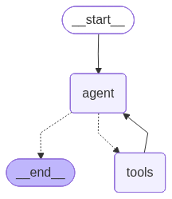

RAG With Persistance Memory Using LangGraph#
import os
from dotenv import load_dotenv
load_dotenv()
os.environ["OPENAI_API_KEY"]=os.getenv("OPENAI_API_KEY")
from langchain.chat_models import init_chat_model
llm=init_chat_model("openai:gpt-5")
llm
ChatOpenAI(client=<openai.resources.chat.completions.completions.Completions object at 0x0000028D277D5040>, async_client=<openai.resources.chat.completions.completions.AsyncCompletions object at 0x0000028D2A61DB80>, root_client=<openai.OpenAI object at 0x0000028D277D4B30>, root_async_client=<openai.AsyncOpenAI object at 0x0000028D277D48C0>, model_name='gpt-5', model_kwargs={}, openai_api_key=SecretStr('**********'), stream_usage=True)
from langchain_openai import OpenAIEmbeddings
embeddings=OpenAIEmbeddings()
embeddings
OpenAIEmbeddings(client=<openai.resources.embeddings.Embeddings object at 0x0000028D2A5AE630>, async_client=<openai.resources.embeddings.AsyncEmbeddings object at 0x0000028D2A033920>, model='text-embedding-ada-002', dimensions=None, deployment='text-embedding-ada-002', openai_api_version=None, openai_api_base=None, openai_api_type=None, openai_proxy=None, embedding_ctx_length=8191, openai_api_key=SecretStr('**********'), openai_organization=None, allowed_special=None, disallowed_special=None, chunk_size=1000, max_retries=2, request_timeout=None, headers=None, tiktoken_enabled=True, tiktoken_model_name=None, show_progress_bar=False, model_kwargs={}, skip_empty=False, default_headers=None, default_query=None, retry_min_seconds=4, retry_max_seconds=20, http_client=None, http_async_client=None, check_embedding_ctx_length=True)
## Document Ingestion And Processing
import bs4
from langchain_community.document_loaders import WebBaseLoader
from langchain_core.documents import Document
from langchain_text_splitters import RecursiveCharacterTextSplitter
from typing_extensions import List, TypedDict
USER_AGENT environment variable not set, consider setting it to identify your requests.
# Load and chunk contents of the blog
loader = WebBaseLoader(
web_paths=("https://lilianweng.github.io/posts/2023-06-23-agent/",),
bs_kwargs=dict(
parse_only=bs4.SoupStrainer(
class_=("post-content", "post-title", "post-header")
)
),
)
docs = loader.load()
docs
[Document(metadata={'source': 'https://lilianweng.github.io/posts/2023-06-23-agent/'}, page_content='\n\n LLM Powered Autonomous Agents\n \nDate: June 23, 2023 | Estimated Reading Time: 31 min | Author: Lilian Weng\n\n\nBuilding agents with LLM (large language model) as its core controller is a cool concept. Several proof-of-concepts demos, such as AutoGPT, GPT-Engineer and BabyAGI, serve as inspiring examples. The potentiality of LLM extends beyond generating well-written copies, stories, essays and programs; it can be framed as a powerful general problem solver.\nAgent System Overview#\nIn a LLM-powered autonomous agent system, LLM functions as the agent’s brain, complemented by several key components:\n\nPlanning\n\nSubgoal and decomposition: The agent breaks down large tasks into smaller, manageable subgoals, enabling efficient handling of complex tasks.\nReflection and refinement: The agent can do self-criticism and self-reflection over past actions, learn from mistakes and refine them for future steps, thereby improving the quality of final results.\n\n\nMemory\n\nShort-term memory: I would consider all the in-context learning (See Prompt Engineering) as utilizing short-term memory of the model to learn.\nLong-term memory: This provides the agent with the capability to retain and recall (infinite) information over extended periods, often by leveraging an external vector store and fast retrieval.\n\n\nTool use\n\nThe agent learns to call external APIs for extra information that is missing from the model weights (often hard to change after pre-training), including current information, code execution capability, access to proprietary information sources and more.\n\n\n\n\n\nOverview of a LLM-powered autonomous agent system.\n\nComponent One: Planning#\nA complicated task usually involves many steps. An agent needs to know what they are and plan ahead.\nTask Decomposition#\nChain of thought (CoT; Wei et al. 2022) has become a standard prompting technique for enhancing model performance on complex tasks. The model is instructed to “think step by step” to utilize more test-time computation to decompose hard tasks into smaller and simpler steps. CoT transforms big tasks into multiple manageable tasks and shed lights into an interpretation of the model’s thinking process.\nTree of Thoughts (Yao et al. 2023) extends CoT by exploring multiple reasoning possibilities at each step. It first decomposes the problem into multiple thought steps and generates multiple thoughts per step, creating a tree structure. The search process can be BFS (breadth-first search) or DFS (depth-first search) with each state evaluated by a classifier (via a prompt) or majority vote.\nTask decomposition can be done (1) by LLM with simple prompting like "Steps for XYZ.\\n1.", "What are the subgoals for achieving XYZ?", (2) by using task-specific instructions; e.g. "Write a story outline." for writing a novel, or (3) with human inputs.\nAnother quite distinct approach, LLM+P (Liu et al. 2023), involves relying on an external classical planner to do long-horizon planning. This approach utilizes the Planning Domain Definition Language (PDDL) as an intermediate interface to describe the planning problem. In this process, LLM (1) translates the problem into “Problem PDDL”, then (2) requests a classical planner to generate a PDDL plan based on an existing “Domain PDDL”, and finally (3) translates the PDDL plan back into natural language. Essentially, the planning step is outsourced to an external tool, assuming the availability of domain-specific PDDL and a suitable planner which is common in certain robotic setups but not in many other domains.\nSelf-Reflection#\nSelf-reflection is a vital aspect that allows autonomous agents to improve iteratively by refining past action decisions and correcting previous mistakes. It plays a crucial role in real-world tasks where trial and error are inevitable.\nReAct (Yao et al. 2023) integrates reasoning and acting within LLM by extending the action space to be a combination of task-specific discrete actions and the language space. The former enables LLM to interact with the environment (e.g. use Wikipedia search API), while the latter prompting LLM to generate reasoning traces in natural language.\nThe ReAct prompt template incorporates explicit steps for LLM to think, roughly formatted as:\nThought: ...\nAction: ...\nObservation: ...\n... (Repeated many times)\n\n\nExamples of reasoning trajectories for knowledge-intensive tasks (e.g. HotpotQA, FEVER) and decision-making tasks (e.g. AlfWorld Env, WebShop). (Image source: Yao et al. 2023).\n\nIn both experiments on knowledge-intensive tasks and decision-making tasks, ReAct works better than the Act-only baseline where Thought: … step is removed.\nReflexion (Shinn & Labash 2023) is a framework to equip agents with dynamic memory and self-reflection capabilities to improve reasoning skills. Reflexion has a standard RL setup, in which the reward model provides a simple binary reward and the action space follows the setup in ReAct where the task-specific action space is augmented with language to enable complex reasoning steps. After each action $a_t$, the agent computes a heuristic $h_t$ and optionally may decide to reset the environment to start a new trial depending on the self-reflection results.\n\n\nIllustration of the Reflexion framework. (Image source: Shinn & Labash, 2023)\n\nThe heuristic function determines when the trajectory is inefficient or contains hallucination and should be stopped. Inefficient planning refers to trajectories that take too long without success. Hallucination is defined as encountering a sequence of consecutive identical actions that lead to the same observation in the environment.\nSelf-reflection is created by showing two-shot examples to LLM and each example is a pair of (failed trajectory, ideal reflection for guiding future changes in the plan). Then reflections are added into the agent’s working memory, up to three, to be used as context for querying LLM.\n\n\nExperiments on AlfWorld Env and HotpotQA. Hallucination is a more common failure than inefficient planning in AlfWorld. (Image source: Shinn & Labash, 2023)\n\nChain of Hindsight (CoH; Liu et al. 2023) encourages the model to improve on its own outputs by explicitly presenting it with a sequence of past outputs, each annotated with feedback. Human feedback data is a collection of $D_h = \\{(x, y_i , r_i , z_i)\\}_{i=1}^n$, where $x$ is the prompt, each $y_i$ is a model completion, $r_i$ is the human rating of $y_i$, and $z_i$ is the corresponding human-provided hindsight feedback. Assume the feedback tuples are ranked by reward, $r_n \\geq r_{n-1} \\geq \\dots \\geq r_1$ The process is supervised fine-tuning where the data is a sequence in the form of $\\tau_h = (x, z_i, y_i, z_j, y_j, \\dots, z_n, y_n)$, where $\\leq i \\leq j \\leq n$. The model is finetuned to only predict $y_n$ where conditioned on the sequence prefix, such that the model can self-reflect to produce better output based on the feedback sequence. The model can optionally receive multiple rounds of instructions with human annotators at test time.\nTo avoid overfitting, CoH adds a regularization term to maximize the log-likelihood of the pre-training dataset. To avoid shortcutting and copying (because there are many common words in feedback sequences), they randomly mask 0% - 5% of past tokens during training.\nThe training dataset in their experiments is a combination of WebGPT comparisons, summarization from human feedback and human preference dataset.\n\n\nAfter fine-tuning with CoH, the model can follow instructions to produce outputs with incremental improvement in a sequence. (Image source: Liu et al. 2023)\n\nThe idea of CoH is to present a history of sequentially improved outputs in context and train the model to take on the trend to produce better outputs. Algorithm Distillation (AD; Laskin et al. 2023) applies the same idea to cross-episode trajectories in reinforcement learning tasks, where an algorithm is encapsulated in a long history-conditioned policy. Considering that an agent interacts with the environment many times and in each episode the agent gets a little better, AD concatenates this learning history and feeds that into the model. Hence we should expect the next predicted action to lead to better performance than previous trials. The goal is to learn the process of RL instead of training a task-specific policy itself.\n\n\nIllustration of how Algorithm Distillation (AD) works. (Image source: Laskin et al. 2023).\n\nThe paper hypothesizes that any algorithm that generates a set of learning histories can be distilled into a neural network by performing behavioral cloning over actions. The history data is generated by a set of source policies, each trained for a specific task. At the training stage, during each RL run, a random task is sampled and a subsequence of multi-episode history is used for training, such that the learned policy is task-agnostic.\nIn reality, the model has limited context window length, so episodes should be short enough to construct multi-episode history. Multi-episodic contexts of 2-4 episodes are necessary to learn a near-optimal in-context RL algorithm. The emergence of in-context RL requires long enough context.\nIn comparison with three baselines, including ED (expert distillation, behavior cloning with expert trajectories instead of learning history), source policy (used for generating trajectories for distillation by UCB), RL^2 (Duan et al. 2017; used as upper bound since it needs online RL), AD demonstrates in-context RL with performance getting close to RL^2 despite only using offline RL and learns much faster than other baselines. When conditioned on partial training history of the source policy, AD also improves much faster than ED baseline.\n\n\nComparison of AD, ED, source policy and RL^2 on environments that require memory and exploration. Only binary reward is assigned. The source policies are trained with A3C for "dark" environments and DQN for watermaze.(Image source: Laskin et al. 2023)\n\nComponent Two: Memory#\n(Big thank you to ChatGPT for helping me draft this section. I’ve learned a lot about the human brain and data structure for fast MIPS in my conversations with ChatGPT.)\nTypes of Memory#\nMemory can be defined as the processes used to acquire, store, retain, and later retrieve information. There are several types of memory in human brains.\n\n\nSensory Memory: This is the earliest stage of memory, providing the ability to retain impressions of sensory information (visual, auditory, etc) after the original stimuli have ended. Sensory memory typically only lasts for up to a few seconds. Subcategories include iconic memory (visual), echoic memory (auditory), and haptic memory (touch).\n\n\nShort-Term Memory (STM) or Working Memory: It stores information that we are currently aware of and needed to carry out complex cognitive tasks such as learning and reasoning. Short-term memory is believed to have the capacity of about 7 items (Miller 1956) and lasts for 20-30 seconds.\n\n\nLong-Term Memory (LTM): Long-term memory can store information for a remarkably long time, ranging from a few days to decades, with an essentially unlimited storage capacity. There are two subtypes of LTM:\n\nExplicit / declarative memory: This is memory of facts and events, and refers to those memories that can be consciously recalled, including episodic memory (events and experiences) and semantic memory (facts and concepts).\nImplicit / procedural memory: This type of memory is unconscious and involves skills and routines that are performed automatically, like riding a bike or typing on a keyboard.\n\n\n\n\n\nCategorization of human memory.\n\nWe can roughly consider the following mappings:\n\nSensory memory as learning embedding representations for raw inputs, including text, image or other modalities;\nShort-term memory as in-context learning. It is short and finite, as it is restricted by the finite context window length of Transformer.\nLong-term memory as the external vector store that the agent can attend to at query time, accessible via fast retrieval.\n\nMaximum Inner Product Search (MIPS)#\nThe external memory can alleviate the restriction of finite attention span. A standard practice is to save the embedding representation of information into a vector store database that can support fast maximum inner-product search (MIPS). To optimize the retrieval speed, the common choice is the approximate nearest neighbors (ANN)\u200b algorithm to return approximately top k nearest neighbors to trade off a little accuracy lost for a huge speedup.\nA couple common choices of ANN algorithms for fast MIPS:\n\nLSH (Locality-Sensitive Hashing): It introduces a hashing function such that similar input items are mapped to the same buckets with high probability, where the number of buckets is much smaller than the number of inputs.\nANNOY (Approximate Nearest Neighbors Oh Yeah): The core data structure are random projection trees, a set of binary trees where each non-leaf node represents a hyperplane splitting the input space into half and each leaf stores one data point. Trees are built independently and at random, so to some extent, it mimics a hashing function. ANNOY search happens in all the trees to iteratively search through the half that is closest to the query and then aggregates the results. The idea is quite related to KD tree but a lot more scalable.\nHNSW (Hierarchical Navigable Small World): It is inspired by the idea of small world networks where most nodes can be reached by any other nodes within a small number of steps; e.g. “six degrees of separation” feature of social networks. HNSW builds hierarchical layers of these small-world graphs, where the bottom layers contain the actual data points. The layers in the middle create shortcuts to speed up search. When performing a search, HNSW starts from a random node in the top layer and navigates towards the target. When it can’t get any closer, it moves down to the next layer, until it reaches the bottom layer. Each move in the upper layers can potentially cover a large distance in the data space, and each move in the lower layers refines the search quality.\nFAISS (Facebook AI Similarity Search): It operates on the assumption that in high dimensional space, distances between nodes follow a Gaussian distribution and thus there should exist clustering of data points. FAISS applies vector quantization by partitioning the vector space into clusters and then refining the quantization within clusters. Search first looks for cluster candidates with coarse quantization and then further looks into each cluster with finer quantization.\nScaNN (Scalable Nearest Neighbors): The main innovation in ScaNN is anisotropic vector quantization. It quantizes a data point $x_i$ to $\\tilde{x}_i$ such that the inner product $\\langle q, x_i \\rangle$ is as similar to the original distance of $\\angle q, \\tilde{x}_i$ as possible, instead of picking the closet quantization centroid points.\n\n\n\nComparison of MIPS algorithms, measured in recall@10. (Image source: Google Blog, 2020)\n\nCheck more MIPS algorithms and performance comparison in ann-benchmarks.com.\nComponent Three: Tool Use#\nTool use is a remarkable and distinguishing characteristic of human beings. We create, modify and utilize external objects to do things that go beyond our physical and cognitive limits. Equipping LLMs with external tools can significantly extend the model capabilities.\n\n\nA picture of a sea otter using rock to crack open a seashell, while floating in the water. While some other animals can use tools, the complexity is not comparable with humans. (Image source: Animals using tools)\n\nMRKL (Karpas et al. 2022), short for “Modular Reasoning, Knowledge and Language”, is a neuro-symbolic architecture for autonomous agents. A MRKL system is proposed to contain a collection of “expert” modules and the general-purpose LLM works as a router to route inquiries to the best suitable expert module. These modules can be neural (e.g. deep learning models) or symbolic (e.g. math calculator, currency converter, weather API).\nThey did an experiment on fine-tuning LLM to call a calculator, using arithmetic as a test case. Their experiments showed that it was harder to solve verbal math problems than explicitly stated math problems because LLMs (7B Jurassic1-large model) failed to extract the right arguments for the basic arithmetic reliably. The results highlight when the external symbolic tools can work reliably, knowing when to and how to use the tools are crucial, determined by the LLM capability.\nBoth TALM (Tool Augmented Language Models; Parisi et al. 2022) and Toolformer (Schick et al. 2023) fine-tune a LM to learn to use external tool APIs. The dataset is expanded based on whether a newly added API call annotation can improve the quality of model outputs. See more details in the “External APIs” section of Prompt Engineering.\nChatGPT Plugins and OpenAI API function calling are good examples of LLMs augmented with tool use capability working in practice. The collection of tool APIs can be provided by other developers (as in Plugins) or self-defined (as in function calls).\nHuggingGPT (Shen et al. 2023) is a framework to use ChatGPT as the task planner to select models available in HuggingFace platform according to the model descriptions and summarize the response based on the execution results.\n\n\nIllustration of how HuggingGPT works. (Image source: Shen et al. 2023)\n\nThe system comprises of 4 stages:\n(1) Task planning: LLM works as the brain and parses the user requests into multiple tasks. There are four attributes associated with each task: task type, ID, dependencies, and arguments. They use few-shot examples to guide LLM to do task parsing and planning.\nInstruction:\n\nThe AI assistant can parse user input to several tasks: [{"task": task, "id", task_id, "dep": dependency_task_ids, "args": {"text": text, "image": URL, "audio": URL, "video": URL}}]. The "dep" field denotes the id of the previous task which generates a new resource that the current task relies on. A special tag "-task_id" refers to the generated text image, audio and video in the dependency task with id as task_id. The task MUST be selected from the following options: {{ Available Task List }}. There is a logical relationship between tasks, please note their order. If the user input can\'t be parsed, you need to reply empty JSON. Here are several cases for your reference: {{ Demonstrations }}. The chat history is recorded as {{ Chat History }}. From this chat history, you can find the path of the user-mentioned resources for your task planning.\n\n(2) Model selection: LLM distributes the tasks to expert models, where the request is framed as a multiple-choice question. LLM is presented with a list of models to choose from. Due to the limited context length, task type based filtration is needed.\nInstruction:\n\nGiven the user request and the call command, the AI assistant helps the user to select a suitable model from a list of models to process the user request. The AI assistant merely outputs the model id of the most appropriate model. The output must be in a strict JSON format: "id": "id", "reason": "your detail reason for the choice". We have a list of models for you to choose from {{ Candidate Models }}. Please select one model from the list.\n\n(3) Task execution: Expert models execute on the specific tasks and log results.\nInstruction:\n\nWith the input and the inference results, the AI assistant needs to describe the process and results. The previous stages can be formed as - User Input: {{ User Input }}, Task Planning: {{ Tasks }}, Model Selection: {{ Model Assignment }}, Task Execution: {{ Predictions }}. You must first answer the user\'s request in a straightforward manner. Then describe the task process and show your analysis and model inference results to the user in the first person. If inference results contain a file path, must tell the user the complete file path.\n\n(4) Response generation: LLM receives the execution results and provides summarized results to users.\nTo put HuggingGPT into real world usage, a couple challenges need to solve: (1) Efficiency improvement is needed as both LLM inference rounds and interactions with other models slow down the process; (2) It relies on a long context window to communicate over complicated task content; (3) Stability improvement of LLM outputs and external model services.\nAPI-Bank (Li et al. 2023) is a benchmark for evaluating the performance of tool-augmented LLMs. It contains 53 commonly used API tools, a complete tool-augmented LLM workflow, and 264 annotated dialogues that involve 568 API calls. The selection of APIs is quite diverse, including search engines, calculator, calendar queries, smart home control, schedule management, health data management, account authentication workflow and more. Because there are a large number of APIs, LLM first has access to API search engine to find the right API to call and then uses the corresponding documentation to make a call.\n\n\nPseudo code of how LLM makes an API call in API-Bank. (Image source: Li et al. 2023)\n\nIn the API-Bank workflow, LLMs need to make a couple of decisions and at each step we can evaluate how accurate that decision is. Decisions include:\n\nWhether an API call is needed.\nIdentify the right API to call: if not good enough, LLMs need to iteratively modify the API inputs (e.g. deciding search keywords for Search Engine API).\nResponse based on the API results: the model can choose to refine and call again if results are not satisfied.\n\nThis benchmark evaluates the agent’s tool use capabilities at three levels:\n\nLevel-1 evaluates the ability to call the API. Given an API’s description, the model needs to determine whether to call a given API, call it correctly, and respond properly to API returns.\nLevel-2 examines the ability to retrieve the API. The model needs to search for possible APIs that may solve the user’s requirement and learn how to use them by reading documentation.\nLevel-3 assesses the ability to plan API beyond retrieve and call. Given unclear user requests (e.g. schedule group meetings, book flight/hotel/restaurant for a trip), the model may have to conduct multiple API calls to solve it.\n\nCase Studies#\nScientific Discovery Agent#\nChemCrow (Bran et al. 2023) is a domain-specific example in which LLM is augmented with 13 expert-designed tools to accomplish tasks across organic synthesis, drug discovery, and materials design. The workflow, implemented in LangChain, reflects what was previously described in the ReAct and MRKLs and combines CoT reasoning with tools relevant to the tasks:\n\nThe LLM is provided with a list of tool names, descriptions of their utility, and details about the expected input/output.\nIt is then instructed to answer a user-given prompt using the tools provided when necessary. The instruction suggests the model to follow the ReAct format - Thought, Action, Action Input, Observation.\n\nOne interesting observation is that while the LLM-based evaluation concluded that GPT-4 and ChemCrow perform nearly equivalently, human evaluations with experts oriented towards the completion and chemical correctness of the solutions showed that ChemCrow outperforms GPT-4 by a large margin. This indicates a potential problem with using LLM to evaluate its own performance on domains that requires deep expertise. The lack of expertise may cause LLMs not knowing its flaws and thus cannot well judge the correctness of task results.\nBoiko et al. (2023) also looked into LLM-empowered agents for scientific discovery, to handle autonomous design, planning, and performance of complex scientific experiments. This agent can use tools to browse the Internet, read documentation, execute code, call robotics experimentation APIs and leverage other LLMs.\nFor example, when requested to "develop a novel anticancer drug", the model came up with the following reasoning steps:\n\ninquired about current trends in anticancer drug discovery;\nselected a target;\nrequested a scaffold targeting these compounds;\nOnce the compound was identified, the model attempted its synthesis.\n\nThey also discussed the risks, especially with illicit drugs and bioweapons. They developed a test set containing a list of known chemical weapon agents and asked the agent to synthesize them. 4 out of 11 requests (36%) were accepted to obtain a synthesis solution and the agent attempted to consult documentation to execute the procedure. 7 out of 11 were rejected and among these 7 rejected cases, 5 happened after a Web search while 2 were rejected based on prompt only.\nGenerative Agents Simulation#\nGenerative Agents (Park, et al. 2023) is super fun experiment where 25 virtual characters, each controlled by a LLM-powered agent, are living and interacting in a sandbox environment, inspired by The Sims. Generative agents create believable simulacra of human behavior for interactive applications.\nThe design of generative agents combines LLM with memory, planning and reflection mechanisms to enable agents to behave conditioned on past experience, as well as to interact with other agents.\n\nMemory stream: is a long-term memory module (external database) that records a comprehensive list of agents’ experience in natural language.\n\nEach element is an observation, an event directly provided by the agent.\n- Inter-agent communication can trigger new natural language statements.\n\n\nRetrieval model: surfaces the context to inform the agent’s behavior, according to relevance, recency and importance.\n\nRecency: recent events have higher scores\nImportance: distinguish mundane from core memories. Ask LM directly.\nRelevance: based on how related it is to the current situation / query.\n\n\nReflection mechanism: synthesizes memories into higher level inferences over time and guides the agent’s future behavior. They are higher-level summaries of past events (<- note that this is a bit different from self-reflection above)\n\nPrompt LM with 100 most recent observations and to generate 3 most salient high-level questions given a set of observations/statements. Then ask LM to answer those questions.\n\n\nPlanning & Reacting: translate the reflections and the environment information into actions\n\nPlanning is essentially in order to optimize believability at the moment vs in time.\nPrompt template: {Intro of an agent X}. Here is X\'s plan today in broad strokes: 1)\nRelationships between agents and observations of one agent by another are all taken into consideration for planning and reacting.\nEnvironment information is present in a tree structure.\n\n\n\n\n\nThe generative agent architecture. (Image source: Park et al. 2023)\n\nThis fun simulation results in emergent social behavior, such as information diffusion, relationship memory (e.g. two agents continuing the conversation topic) and coordination of social events (e.g. host a party and invite many others).\nProof-of-Concept Examples#\nAutoGPT has drawn a lot of attention into the possibility of setting up autonomous agents with LLM as the main controller. It has quite a lot of reliability issues given the natural language interface, but nevertheless a cool proof-of-concept demo. A lot of code in AutoGPT is about format parsing.\nHere is the system message used by AutoGPT, where {{...}} are user inputs:\nYou are {{ai-name}}, {{user-provided AI bot description}}.\nYour decisions must always be made independently without seeking user assistance. Play to your strengths as an LLM and pursue simple strategies with no legal complications.\n\nGOALS:\n\n1. {{user-provided goal 1}}\n2. {{user-provided goal 2}}\n3. ...\n4. ...\n5. ...\n\nConstraints:\n1. ~4000 word limit for short term memory. Your short term memory is short, so immediately save important information to files.\n2. If you are unsure how you previously did something or want to recall past events, thinking about similar events will help you remember.\n3. No user assistance\n4. Exclusively use the commands listed in double quotes e.g. "command name"\n5. Use subprocesses for commands that will not terminate within a few minutes\n\nCommands:\n1. Google Search: "google", args: "input": "<search>"\n2. Browse Website: "browse_website", args: "url": "<url>", "question": "<what_you_want_to_find_on_website>"\n3. Start GPT Agent: "start_agent", args: "name": "<name>", "task": "<short_task_desc>", "prompt": "<prompt>"\n4. Message GPT Agent: "message_agent", args: "key": "<key>", "message": "<message>"\n5. List GPT Agents: "list_agents", args:\n6. Delete GPT Agent: "delete_agent", args: "key": "<key>"\n7. Clone Repository: "clone_repository", args: "repository_url": "<url>", "clone_path": "<directory>"\n8. Write to file: "write_to_file", args: "file": "<file>", "text": "<text>"\n9. Read file: "read_file", args: "file": "<file>"\n10. Append to file: "append_to_file", args: "file": "<file>", "text": "<text>"\n11. Delete file: "delete_file", args: "file": "<file>"\n12. Search Files: "search_files", args: "directory": "<directory>"\n13. Analyze Code: "analyze_code", args: "code": "<full_code_string>"\n14. Get Improved Code: "improve_code", args: "suggestions": "<list_of_suggestions>", "code": "<full_code_string>"\n15. Write Tests: "write_tests", args: "code": "<full_code_string>", "focus": "<list_of_focus_areas>"\n16. Execute Python File: "execute_python_file", args: "file": "<file>"\n17. Generate Image: "generate_image", args: "prompt": "<prompt>"\n18. Send Tweet: "send_tweet", args: "text": "<text>"\n19. Do Nothing: "do_nothing", args:\n20. Task Complete (Shutdown): "task_complete", args: "reason": "<reason>"\n\nResources:\n1. Internet access for searches and information gathering.\n2. Long Term memory management.\n3. GPT-3.5 powered Agents for delegation of simple tasks.\n4. File output.\n\nPerformance Evaluation:\n1. Continuously review and analyze your actions to ensure you are performing to the best of your abilities.\n2. Constructively self-criticize your big-picture behavior constantly.\n3. Reflect on past decisions and strategies to refine your approach.\n4. Every command has a cost, so be smart and efficient. Aim to complete tasks in the least number of steps.\n\nYou should only respond in JSON format as described below\nResponse Format:\n{\n "thoughts": {\n "text": "thought",\n "reasoning": "reasoning",\n "plan": "- short bulleted\\n- list that conveys\\n- long-term plan",\n "criticism": "constructive self-criticism",\n "speak": "thoughts summary to say to user"\n },\n "command": {\n "name": "command name",\n "args": {\n "arg name": "value"\n }\n }\n}\nEnsure the response can be parsed by Python json.loads\nGPT-Engineer is another project to create a whole repository of code given a task specified in natural language. The GPT-Engineer is instructed to think over a list of smaller components to build and ask for user input to clarify questions as needed.\nHere are a sample conversation for task clarification sent to OpenAI ChatCompletion endpoint used by GPT-Engineer. The user inputs are wrapped in {{user input text}}.\n[\n {\n "role": "system",\n "content": "You will read instructions and not carry them out, only seek to clarify them.\\nSpecifically you will first summarise a list of super short bullets of areas that need clarification.\\nThen you will pick one clarifying question, and wait for an answer from the user.\\n"\n },\n {\n "role": "user",\n "content": "We are writing {{a Super Mario game in python. MVC components split in separate files. Keyboard control.}}\\n"\n },\n {\n "role": "assistant",\n "content": "Summary of areas that need clarification:\\n1. Specifics of the Super Mario game (e.g. level design, characters, gameplay mechanics)\\n2. Details about the MVC components (e.g. which components are in each file)\\n3. Keyboard control implementation (e.g. which keys to use, how to handle input)\\n\\nClarifying question:\\nCan you provide more details about the Super Mario game, such as level design, characters, and gameplay mechanics?"\n },\n {\n "role": "user",\n "content": "{{There are 10 levels in total. The main character is a plumber named Mario, who can walk and jump. It is a classical platform game just like Super Mario. The main character moves from left to right, trying to get to the destination, where there are many obstacles and attacks from enemies in the process.}}\\n\\nIs anything else unclear? If yes, only answer in the form:\\n{remaining unclear areas} remaining questions.\\n{Next question}\\nIf everything is sufficiently clear, only answer \\"Nothing more to clarify.\\"."\n },\n {\n "role": "assistant",\n "content": "Remaining unclear areas: 2 remaining questions.\\nCan you provide more information about how the MVC components are split into separate files?"\n },\n {\n "role": "user",\n "content": "{{Make your own assumptions and state them explicitly before starting}}"\n }\n]\nThen after these clarification, the agent moved into the code writing mode with a different system message.\nSystem message:\n\nYou will get instructions for code to write.\nYou will write a very long answer. Make sure that every detail of the architecture is, in the end, implemented as code.\nMake sure that every detail of the architecture is, in the end, implemented as code.\nThink step by step and reason yourself to the right decisions to make sure we get it right.\nYou will first lay out the names of the core classes, functions, methods that will be necessary, as well as a quick comment on their purpose.\nThen you will output the content of each file including ALL code.\nEach file must strictly follow a markdown code block format, where the following tokens must be replaced such that\nFILENAME is the lowercase file name including the file extension,\nLANG is the markup code block language for the code’s language, and CODE is the code:\nFILENAME\nCODE\nYou will start with the “entrypoint” file, then go to the ones that are imported by that file, and so on.\nPlease note that the code should be fully functional. No placeholders.\nFollow a language and framework appropriate best practice file naming convention.\nMake sure that files contain all imports, types etc. Make sure that code in different files are compatible with each other.\nEnsure to implement all code, if you are unsure, write a plausible implementation.\nInclude module dependency or package manager dependency definition file.\nBefore you finish, double check that all parts of the architecture is present in the files.\nUseful to know:\nYou almost always put different classes in different files.\nFor Python, you always create an appropriate requirements.txt file.\nFor NodeJS, you always create an appropriate package.json file.\nYou always add a comment briefly describing the purpose of the function definition.\nYou try to add comments explaining very complex bits of logic.\nYou always follow the best practices for the requested languages in terms of describing the code written as a defined\npackage/project.\nPython toolbelt preferences:\n\npytest\ndataclasses\n\n\nConversatin samples:\n[\n {\n "role": "system",\n "content": "You will get instructions for code to write.\\nYou will write a very long answer. Make sure that every detail of the architecture is, in the end, implemented as code.\\nMake sure that every detail of the architecture is, in the end, implemented as code.\\n\\nThink step by step and reason yourself to the right decisions to make sure we get it right.\\nYou will first lay out the names of the core classes, functions, methods that will be necessary, as well as a quick comment on their purpose.\\n\\nThen you will output the content of each file including ALL code.\\nEach file must strictly follow a markdown code block format, where the following tokens must be replaced such that\\nFILENAME is the lowercase file name including the file extension,\\nLANG is the markup code block language for the code\'s language, and CODE is the code:\\n\\nFILENAME\\n```LANG\\nCODE\\n```\\n\\nYou will start with the \\"entrypoint\\" file, then go to the ones that are imported by that file, and so on.\\nPlease note that the code should be fully functional. No placeholders.\\n\\nFollow a language and framework appropriate best practice file naming convention.\\nMake sure that files contain all imports, types etc. Make sure that code in different files are compatible with each other.\\nEnsure to implement all code, if you are unsure, write a plausible implementation.\\nInclude module dependency or package manager dependency definition file.\\nBefore you finish, double check that all parts of the architecture is present in the files.\\n\\nUseful to know:\\nYou almost always put different classes in different files.\\nFor Python, you always create an appropriate requirements.txt file.\\nFor NodeJS, you always create an appropriate package.json file.\\nYou always add a comment briefly describing the purpose of the function definition.\\nYou try to add comments explaining very complex bits of logic.\\nYou always follow the best practices for the requested languages in terms of describing the code written as a defined\\npackage/project.\\n\\n\\nPython toolbelt preferences:\\n- pytest\\n- dataclasses\\n"\n },\n # … same conversation as earlier, ended with "Make your own assumptions and state them explicitly before starting".\n {\n "role": "assistant",\n "content": "Assumptions:\\n1. Model: The model will contain the game\'s data, such as level information, character states, and enemy positions.\\n2. View: The view will handle the game\'s visuals, including rendering the game objects, backgrounds, and updating the display.\\n3. Controller: The controller will manage user input, such as keyboard controls, and update the model accordingly.\\n\\nWith these assumptions in mind, is there any specific aspect of the keyboard control implementation you would like me to clarify?"\n },\n {\n "role": "user",\n "content": "Please now remember the steps:\\n\\nThink step by step and reason yourself to the right decisions to make sure we get it right.\\nFirst lay out the names of the core classes, functions, methods that will be necessary, As well as a quick comment on their purpose.\\n\\nThen you will output the content of each file including ALL code.\\nEach file must strictly follow a markdown code block format, where the following tokens must be replaced such that\\nFILENAME is the lowercase file name including the file extension,\\nLANG is the markup code block language for the code\'s language, and CODE is the code:\\n\\nFILENAME\\n```LANG\\nCODE\\n```\\n\\nPlease note that the code should be fully functional. No placeholders.\\n\\nYou will start with the \\"entrypoint\\" file, then go to the ones that are imported by that file, and so on.\\nFollow a language and framework appropriate best practice file naming convention.\\nMake sure that files contain all imports, types etc. The code should be fully functional. Make sure that code in different files are compatible with each other.\\nBefore you finish, double check that all parts of the architecture is present in the files.\\n"\n }\n]\nChallenges#\nAfter going through key ideas and demos of building LLM-centered agents, I start to see a couple common limitations:\n\n\nFinite context length: The restricted context capacity limits the inclusion of historical information, detailed instructions, API call context, and responses. The design of the system has to work with this limited communication bandwidth, while mechanisms like self-reflection to learn from past mistakes would benefit a lot from long or infinite context windows. Although vector stores and retrieval can provide access to a larger knowledge pool, their representation power is not as powerful as full attention.\n\n\nChallenges in long-term planning and task decomposition: Planning over a lengthy history and effectively exploring the solution space remain challenging. LLMs struggle to adjust plans when faced with unexpected errors, making them less robust compared to humans who learn from trial and error.\n\n\nReliability of natural language interface: Current agent system relies on natural language as an interface between LLMs and external components such as memory and tools. However, the reliability of model outputs is questionable, as LLMs may make formatting errors and occasionally exhibit rebellious behavior (e.g. refuse to follow an instruction). Consequently, much of the agent demo code focuses on parsing model output.\n\n\nCitation#\nCited as:\n\nWeng, Lilian. (Jun 2023). “LLM-powered Autonomous Agents”. Lil’Log. https://lilianweng.github.io/posts/2023-06-23-agent/.\n\nOr\n@article{weng2023agent,\n title = "LLM-powered Autonomous Agents",\n author = "Weng, Lilian",\n journal = "lilianweng.github.io",\n year = "2023",\n month = "Jun",\n url = "https://lilianweng.github.io/posts/2023-06-23-agent/"\n}\nReferences#\n[1] Wei et al. “Chain of thought prompting elicits reasoning in large language models.” NeurIPS 2022\n[2] Yao et al. “Tree of Thoughts: Dliberate Problem Solving with Large Language Models.” arXiv preprint arXiv:2305.10601 (2023).\n[3] Liu et al. “Chain of Hindsight Aligns Language Models with Feedback\n“ arXiv preprint arXiv:2302.02676 (2023).\n[4] Liu et al. “LLM+P: Empowering Large Language Models with Optimal Planning Proficiency” arXiv preprint arXiv:2304.11477 (2023).\n[5] Yao et al. “ReAct: Synergizing reasoning and acting in language models.” ICLR 2023.\n[6] Google Blog. “Announcing ScaNN: Efficient Vector Similarity Search” July 28, 2020.\n[7] https://chat.openai.com/share/46ff149e-a4c7-4dd7-a800-fc4a642ea389\n[8] Shinn & Labash. “Reflexion: an autonomous agent with dynamic memory and self-reflection” arXiv preprint arXiv:2303.11366 (2023).\n[9] Laskin et al. “In-context Reinforcement Learning with Algorithm Distillation” ICLR 2023.\n[10] Karpas et al. “MRKL Systems A modular, neuro-symbolic architecture that combines large language models, external knowledge sources and discrete reasoning.” arXiv preprint arXiv:2205.00445 (2022).\n[11] Nakano et al. “Webgpt: Browser-assisted question-answering with human feedback.” arXiv preprint arXiv:2112.09332 (2021).\n[12] Parisi et al. “TALM: Tool Augmented Language Models”\n[13] Schick et al. “Toolformer: Language Models Can Teach Themselves to Use Tools.” arXiv preprint arXiv:2302.04761 (2023).\n[14] Weaviate Blog. Why is Vector Search so fast? Sep 13, 2022.\n[15] Li et al. “API-Bank: A Benchmark for Tool-Augmented LLMs” arXiv preprint arXiv:2304.08244 (2023).\n[16] Shen et al. “HuggingGPT: Solving AI Tasks with ChatGPT and its Friends in HuggingFace” arXiv preprint arXiv:2303.17580 (2023).\n[17] Bran et al. “ChemCrow: Augmenting large-language models with chemistry tools.” arXiv preprint arXiv:2304.05376 (2023).\n[18] Boiko et al. “Emergent autonomous scientific research capabilities of large language models.” arXiv preprint arXiv:2304.05332 (2023).\n[19] Joon Sung Park, et al. “Generative Agents: Interactive Simulacra of Human Behavior.” arXiv preprint arXiv:2304.03442 (2023).\n[20] AutoGPT. https://github.com/Significant-Gravitas/Auto-GPT\n[21] GPT-Engineer. https://github.com/AntonOsika/gpt-engineer\n')]
## chunking
text_splitter = RecursiveCharacterTextSplitter(chunk_size=1000, chunk_overlap=200)
all_splits = text_splitter.split_documents(docs)
all_splits
[Document(metadata={'source': 'https://lilianweng.github.io/posts/2023-06-23-agent/'}, page_content='LLM Powered Autonomous Agents\n \nDate: June 23, 2023 | Estimated Reading Time: 31 min | Author: Lilian Weng\n\n\nBuilding agents with LLM (large language model) as its core controller is a cool concept. Several proof-of-concepts demos, such as AutoGPT, GPT-Engineer and BabyAGI, serve as inspiring examples. The potentiality of LLM extends beyond generating well-written copies, stories, essays and programs; it can be framed as a powerful general problem solver.\nAgent System Overview#\nIn a LLM-powered autonomous agent system, LLM functions as the agent’s brain, complemented by several key components:\n\nPlanning\n\nSubgoal and decomposition: The agent breaks down large tasks into smaller, manageable subgoals, enabling efficient handling of complex tasks.\nReflection and refinement: The agent can do self-criticism and self-reflection over past actions, learn from mistakes and refine them for future steps, thereby improving the quality of final results.\n\n\nMemory'),
Document(metadata={'source': 'https://lilianweng.github.io/posts/2023-06-23-agent/'}, page_content='Memory\n\nShort-term memory: I would consider all the in-context learning (See Prompt Engineering) as utilizing short-term memory of the model to learn.\nLong-term memory: This provides the agent with the capability to retain and recall (infinite) information over extended periods, often by leveraging an external vector store and fast retrieval.\n\n\nTool use\n\nThe agent learns to call external APIs for extra information that is missing from the model weights (often hard to change after pre-training), including current information, code execution capability, access to proprietary information sources and more.\n\n\n\n\n\nOverview of a LLM-powered autonomous agent system.'),
Document(metadata={'source': 'https://lilianweng.github.io/posts/2023-06-23-agent/'}, page_content='Component One: Planning#\nA complicated task usually involves many steps. An agent needs to know what they are and plan ahead.\nTask Decomposition#\nChain of thought (CoT; Wei et al. 2022) has become a standard prompting technique for enhancing model performance on complex tasks. The model is instructed to “think step by step” to utilize more test-time computation to decompose hard tasks into smaller and simpler steps. CoT transforms big tasks into multiple manageable tasks and shed lights into an interpretation of the model’s thinking process.\nTree of Thoughts (Yao et al. 2023) extends CoT by exploring multiple reasoning possibilities at each step. It first decomposes the problem into multiple thought steps and generates multiple thoughts per step, creating a tree structure. The search process can be BFS (breadth-first search) or DFS (depth-first search) with each state evaluated by a classifier (via a prompt) or majority vote.'),
Document(metadata={'source': 'https://lilianweng.github.io/posts/2023-06-23-agent/'}, page_content='Task decomposition can be done (1) by LLM with simple prompting like "Steps for XYZ.\\n1.", "What are the subgoals for achieving XYZ?", (2) by using task-specific instructions; e.g. "Write a story outline." for writing a novel, or (3) with human inputs.\nAnother quite distinct approach, LLM+P (Liu et al. 2023), involves relying on an external classical planner to do long-horizon planning. This approach utilizes the Planning Domain Definition Language (PDDL) as an intermediate interface to describe the planning problem. In this process, LLM (1) translates the problem into “Problem PDDL”, then (2) requests a classical planner to generate a PDDL plan based on an existing “Domain PDDL”, and finally (3) translates the PDDL plan back into natural language. Essentially, the planning step is outsourced to an external tool, assuming the availability of domain-specific PDDL and a suitable planner which is common in certain robotic setups but not in many other domains.\nSelf-Reflection#'),
Document(metadata={'source': 'https://lilianweng.github.io/posts/2023-06-23-agent/'}, page_content='Self-Reflection#\nSelf-reflection is a vital aspect that allows autonomous agents to improve iteratively by refining past action decisions and correcting previous mistakes. It plays a crucial role in real-world tasks where trial and error are inevitable.\nReAct (Yao et al. 2023) integrates reasoning and acting within LLM by extending the action space to be a combination of task-specific discrete actions and the language space. The former enables LLM to interact with the environment (e.g. use Wikipedia search API), while the latter prompting LLM to generate reasoning traces in natural language.\nThe ReAct prompt template incorporates explicit steps for LLM to think, roughly formatted as:\nThought: ...\nAction: ...\nObservation: ...\n... (Repeated many times)'),
Document(metadata={'source': 'https://lilianweng.github.io/posts/2023-06-23-agent/'}, page_content='Examples of reasoning trajectories for knowledge-intensive tasks (e.g. HotpotQA, FEVER) and decision-making tasks (e.g. AlfWorld Env, WebShop). (Image source: Yao et al. 2023).\n\nIn both experiments on knowledge-intensive tasks and decision-making tasks, ReAct works better than the Act-only baseline where Thought: … step is removed.\nReflexion (Shinn & Labash 2023) is a framework to equip agents with dynamic memory and self-reflection capabilities to improve reasoning skills. Reflexion has a standard RL setup, in which the reward model provides a simple binary reward and the action space follows the setup in ReAct where the task-specific action space is augmented with language to enable complex reasoning steps. After each action $a_t$, the agent computes a heuristic $h_t$ and optionally may decide to reset the environment to start a new trial depending on the self-reflection results.\n\n\nIllustration of the Reflexion framework. (Image source: Shinn & Labash, 2023)'),
Document(metadata={'source': 'https://lilianweng.github.io/posts/2023-06-23-agent/'}, page_content='Illustration of the Reflexion framework. (Image source: Shinn & Labash, 2023)\n\nThe heuristic function determines when the trajectory is inefficient or contains hallucination and should be stopped. Inefficient planning refers to trajectories that take too long without success. Hallucination is defined as encountering a sequence of consecutive identical actions that lead to the same observation in the environment.\nSelf-reflection is created by showing two-shot examples to LLM and each example is a pair of (failed trajectory, ideal reflection for guiding future changes in the plan). Then reflections are added into the agent’s working memory, up to three, to be used as context for querying LLM.\n\n\nExperiments on AlfWorld Env and HotpotQA. Hallucination is a more common failure than inefficient planning in AlfWorld. (Image source: Shinn & Labash, 2023)'),
Document(metadata={'source': 'https://lilianweng.github.io/posts/2023-06-23-agent/'}, page_content='Chain of Hindsight (CoH; Liu et al. 2023) encourages the model to improve on its own outputs by explicitly presenting it with a sequence of past outputs, each annotated with feedback. Human feedback data is a collection of $D_h = \\{(x, y_i , r_i , z_i)\\}_{i=1}^n$, where $x$ is the prompt, each $y_i$ is a model completion, $r_i$ is the human rating of $y_i$, and $z_i$ is the corresponding human-provided hindsight feedback. Assume the feedback tuples are ranked by reward, $r_n \\geq r_{n-1} \\geq \\dots \\geq r_1$ The process is supervised fine-tuning where the data is a sequence in the form of $\\tau_h = (x, z_i, y_i, z_j, y_j, \\dots, z_n, y_n)$, where $\\leq i \\leq j \\leq n$. The model is finetuned to only predict $y_n$ where conditioned on the sequence prefix, such that the model can self-reflect to produce better output based on the feedback sequence. The model can optionally receive multiple rounds of instructions with human annotators at test time.'),
Document(metadata={'source': 'https://lilianweng.github.io/posts/2023-06-23-agent/'}, page_content='To avoid overfitting, CoH adds a regularization term to maximize the log-likelihood of the pre-training dataset. To avoid shortcutting and copying (because there are many common words in feedback sequences), they randomly mask 0% - 5% of past tokens during training.\nThe training dataset in their experiments is a combination of WebGPT comparisons, summarization from human feedback and human preference dataset.'),
Document(metadata={'source': 'https://lilianweng.github.io/posts/2023-06-23-agent/'}, page_content='After fine-tuning with CoH, the model can follow instructions to produce outputs with incremental improvement in a sequence. (Image source: Liu et al. 2023)\n\nThe idea of CoH is to present a history of sequentially improved outputs in context and train the model to take on the trend to produce better outputs. Algorithm Distillation (AD; Laskin et al. 2023) applies the same idea to cross-episode trajectories in reinforcement learning tasks, where an algorithm is encapsulated in a long history-conditioned policy. Considering that an agent interacts with the environment many times and in each episode the agent gets a little better, AD concatenates this learning history and feeds that into the model. Hence we should expect the next predicted action to lead to better performance than previous trials. The goal is to learn the process of RL instead of training a task-specific policy itself.\n\n\nIllustration of how Algorithm Distillation (AD) works. (Image source: Laskin et al. 2023).'),
Document(metadata={'source': 'https://lilianweng.github.io/posts/2023-06-23-agent/'}, page_content='The paper hypothesizes that any algorithm that generates a set of learning histories can be distilled into a neural network by performing behavioral cloning over actions. The history data is generated by a set of source policies, each trained for a specific task. At the training stage, during each RL run, a random task is sampled and a subsequence of multi-episode history is used for training, such that the learned policy is task-agnostic.\nIn reality, the model has limited context window length, so episodes should be short enough to construct multi-episode history. Multi-episodic contexts of 2-4 episodes are necessary to learn a near-optimal in-context RL algorithm. The emergence of in-context RL requires long enough context.'),
Document(metadata={'source': 'https://lilianweng.github.io/posts/2023-06-23-agent/'}, page_content='In comparison with three baselines, including ED (expert distillation, behavior cloning with expert trajectories instead of learning history), source policy (used for generating trajectories for distillation by UCB), RL^2 (Duan et al. 2017; used as upper bound since it needs online RL), AD demonstrates in-context RL with performance getting close to RL^2 despite only using offline RL and learns much faster than other baselines. When conditioned on partial training history of the source policy, AD also improves much faster than ED baseline.'),
Document(metadata={'source': 'https://lilianweng.github.io/posts/2023-06-23-agent/'}, page_content='Comparison of AD, ED, source policy and RL^2 on environments that require memory and exploration. Only binary reward is assigned. The source policies are trained with A3C for "dark" environments and DQN for watermaze.(Image source: Laskin et al. 2023)\n\nComponent Two: Memory#\n(Big thank you to ChatGPT for helping me draft this section. I’ve learned a lot about the human brain and data structure for fast MIPS in my conversations with ChatGPT.)\nTypes of Memory#\nMemory can be defined as the processes used to acquire, store, retain, and later retrieve information. There are several types of memory in human brains.\n\n\nSensory Memory: This is the earliest stage of memory, providing the ability to retain impressions of sensory information (visual, auditory, etc) after the original stimuli have ended. Sensory memory typically only lasts for up to a few seconds. Subcategories include iconic memory (visual), echoic memory (auditory), and haptic memory (touch).'),
Document(metadata={'source': 'https://lilianweng.github.io/posts/2023-06-23-agent/'}, page_content='Short-Term Memory (STM) or Working Memory: It stores information that we are currently aware of and needed to carry out complex cognitive tasks such as learning and reasoning. Short-term memory is believed to have the capacity of about 7 items (Miller 1956) and lasts for 20-30 seconds.\n\n\nLong-Term Memory (LTM): Long-term memory can store information for a remarkably long time, ranging from a few days to decades, with an essentially unlimited storage capacity. There are two subtypes of LTM:\n\nExplicit / declarative memory: This is memory of facts and events, and refers to those memories that can be consciously recalled, including episodic memory (events and experiences) and semantic memory (facts and concepts).\nImplicit / procedural memory: This type of memory is unconscious and involves skills and routines that are performed automatically, like riding a bike or typing on a keyboard.\n\n\n\n\n\nCategorization of human memory.\n\nWe can roughly consider the following mappings:'),
Document(metadata={'source': 'https://lilianweng.github.io/posts/2023-06-23-agent/'}, page_content='Categorization of human memory.\n\nWe can roughly consider the following mappings:\n\nSensory memory as learning embedding representations for raw inputs, including text, image or other modalities;\nShort-term memory as in-context learning. It is short and finite, as it is restricted by the finite context window length of Transformer.\nLong-term memory as the external vector store that the agent can attend to at query time, accessible via fast retrieval.'),
Document(metadata={'source': 'https://lilianweng.github.io/posts/2023-06-23-agent/'}, page_content='Maximum Inner Product Search (MIPS)#\nThe external memory can alleviate the restriction of finite attention span. A standard practice is to save the embedding representation of information into a vector store database that can support fast maximum inner-product search (MIPS). To optimize the retrieval speed, the common choice is the approximate nearest neighbors (ANN)\u200b algorithm to return approximately top k nearest neighbors to trade off a little accuracy lost for a huge speedup.\nA couple common choices of ANN algorithms for fast MIPS:'),
Document(metadata={'source': 'https://lilianweng.github.io/posts/2023-06-23-agent/'}, page_content='LSH (Locality-Sensitive Hashing): It introduces a hashing function such that similar input items are mapped to the same buckets with high probability, where the number of buckets is much smaller than the number of inputs.\nANNOY (Approximate Nearest Neighbors Oh Yeah): The core data structure are random projection trees, a set of binary trees where each non-leaf node represents a hyperplane splitting the input space into half and each leaf stores one data point. Trees are built independently and at random, so to some extent, it mimics a hashing function. ANNOY search happens in all the trees to iteratively search through the half that is closest to the query and then aggregates the results. The idea is quite related to KD tree but a lot more scalable.'),
Document(metadata={'source': 'https://lilianweng.github.io/posts/2023-06-23-agent/'}, page_content='HNSW (Hierarchical Navigable Small World): It is inspired by the idea of small world networks where most nodes can be reached by any other nodes within a small number of steps; e.g. “six degrees of separation” feature of social networks. HNSW builds hierarchical layers of these small-world graphs, where the bottom layers contain the actual data points. The layers in the middle create shortcuts to speed up search. When performing a search, HNSW starts from a random node in the top layer and navigates towards the target. When it can’t get any closer, it moves down to the next layer, until it reaches the bottom layer. Each move in the upper layers can potentially cover a large distance in the data space, and each move in the lower layers refines the search quality.'),
Document(metadata={'source': 'https://lilianweng.github.io/posts/2023-06-23-agent/'}, page_content='FAISS (Facebook AI Similarity Search): It operates on the assumption that in high dimensional space, distances between nodes follow a Gaussian distribution and thus there should exist clustering of data points. FAISS applies vector quantization by partitioning the vector space into clusters and then refining the quantization within clusters. Search first looks for cluster candidates with coarse quantization and then further looks into each cluster with finer quantization.\nScaNN (Scalable Nearest Neighbors): The main innovation in ScaNN is anisotropic vector quantization. It quantizes a data point $x_i$ to $\\tilde{x}_i$ such that the inner product $\\langle q, x_i \\rangle$ is as similar to the original distance of $\\angle q, \\tilde{x}_i$ as possible, instead of picking the closet quantization centroid points.'),
Document(metadata={'source': 'https://lilianweng.github.io/posts/2023-06-23-agent/'}, page_content='Comparison of MIPS algorithms, measured in recall@10. (Image source: Google Blog, 2020)\n\nCheck more MIPS algorithms and performance comparison in ann-benchmarks.com.\nComponent Three: Tool Use#\nTool use is a remarkable and distinguishing characteristic of human beings. We create, modify and utilize external objects to do things that go beyond our physical and cognitive limits. Equipping LLMs with external tools can significantly extend the model capabilities.\n\n\nA picture of a sea otter using rock to crack open a seashell, while floating in the water. While some other animals can use tools, the complexity is not comparable with humans. (Image source: Animals using tools)'),
Document(metadata={'source': 'https://lilianweng.github.io/posts/2023-06-23-agent/'}, page_content='MRKL (Karpas et al. 2022), short for “Modular Reasoning, Knowledge and Language”, is a neuro-symbolic architecture for autonomous agents. A MRKL system is proposed to contain a collection of “expert” modules and the general-purpose LLM works as a router to route inquiries to the best suitable expert module. These modules can be neural (e.g. deep learning models) or symbolic (e.g. math calculator, currency converter, weather API).\nThey did an experiment on fine-tuning LLM to call a calculator, using arithmetic as a test case. Their experiments showed that it was harder to solve verbal math problems than explicitly stated math problems because LLMs (7B Jurassic1-large model) failed to extract the right arguments for the basic arithmetic reliably. The results highlight when the external symbolic tools can work reliably, knowing when to and how to use the tools are crucial, determined by the LLM capability.'),
Document(metadata={'source': 'https://lilianweng.github.io/posts/2023-06-23-agent/'}, page_content='Both TALM (Tool Augmented Language Models; Parisi et al. 2022) and Toolformer (Schick et al. 2023) fine-tune a LM to learn to use external tool APIs. The dataset is expanded based on whether a newly added API call annotation can improve the quality of model outputs. See more details in the “External APIs” section of Prompt Engineering.\nChatGPT Plugins and OpenAI API function calling are good examples of LLMs augmented with tool use capability working in practice. The collection of tool APIs can be provided by other developers (as in Plugins) or self-defined (as in function calls).\nHuggingGPT (Shen et al. 2023) is a framework to use ChatGPT as the task planner to select models available in HuggingFace platform according to the model descriptions and summarize the response based on the execution results.'),
Document(metadata={'source': 'https://lilianweng.github.io/posts/2023-06-23-agent/'}, page_content='Illustration of how HuggingGPT works. (Image source: Shen et al. 2023)\n\nThe system comprises of 4 stages:\n(1) Task planning: LLM works as the brain and parses the user requests into multiple tasks. There are four attributes associated with each task: task type, ID, dependencies, and arguments. They use few-shot examples to guide LLM to do task parsing and planning.\nInstruction:'),
Document(metadata={'source': 'https://lilianweng.github.io/posts/2023-06-23-agent/'}, page_content='The AI assistant can parse user input to several tasks: [{"task": task, "id", task_id, "dep": dependency_task_ids, "args": {"text": text, "image": URL, "audio": URL, "video": URL}}]. The "dep" field denotes the id of the previous task which generates a new resource that the current task relies on. A special tag "-task_id" refers to the generated text image, audio and video in the dependency task with id as task_id. The task MUST be selected from the following options: {{ Available Task List }}. There is a logical relationship between tasks, please note their order. If the user input can\'t be parsed, you need to reply empty JSON. Here are several cases for your reference: {{ Demonstrations }}. The chat history is recorded as {{ Chat History }}. From this chat history, you can find the path of the user-mentioned resources for your task planning.'),
Document(metadata={'source': 'https://lilianweng.github.io/posts/2023-06-23-agent/'}, page_content='(2) Model selection: LLM distributes the tasks to expert models, where the request is framed as a multiple-choice question. LLM is presented with a list of models to choose from. Due to the limited context length, task type based filtration is needed.\nInstruction:\n\nGiven the user request and the call command, the AI assistant helps the user to select a suitable model from a list of models to process the user request. The AI assistant merely outputs the model id of the most appropriate model. The output must be in a strict JSON format: "id": "id", "reason": "your detail reason for the choice". We have a list of models for you to choose from {{ Candidate Models }}. Please select one model from the list.\n\n(3) Task execution: Expert models execute on the specific tasks and log results.\nInstruction:'),
Document(metadata={'source': 'https://lilianweng.github.io/posts/2023-06-23-agent/'}, page_content="(3) Task execution: Expert models execute on the specific tasks and log results.\nInstruction:\n\nWith the input and the inference results, the AI assistant needs to describe the process and results. The previous stages can be formed as - User Input: {{ User Input }}, Task Planning: {{ Tasks }}, Model Selection: {{ Model Assignment }}, Task Execution: {{ Predictions }}. You must first answer the user's request in a straightforward manner. Then describe the task process and show your analysis and model inference results to the user in the first person. If inference results contain a file path, must tell the user the complete file path."),
Document(metadata={'source': 'https://lilianweng.github.io/posts/2023-06-23-agent/'}, page_content='(4) Response generation: LLM receives the execution results and provides summarized results to users.\nTo put HuggingGPT into real world usage, a couple challenges need to solve: (1) Efficiency improvement is needed as both LLM inference rounds and interactions with other models slow down the process; (2) It relies on a long context window to communicate over complicated task content; (3) Stability improvement of LLM outputs and external model services.'),
Document(metadata={'source': 'https://lilianweng.github.io/posts/2023-06-23-agent/'}, page_content='API-Bank (Li et al. 2023) is a benchmark for evaluating the performance of tool-augmented LLMs. It contains 53 commonly used API tools, a complete tool-augmented LLM workflow, and 264 annotated dialogues that involve 568 API calls. The selection of APIs is quite diverse, including search engines, calculator, calendar queries, smart home control, schedule management, health data management, account authentication workflow and more. Because there are a large number of APIs, LLM first has access to API search engine to find the right API to call and then uses the corresponding documentation to make a call.'),
Document(metadata={'source': 'https://lilianweng.github.io/posts/2023-06-23-agent/'}, page_content='Pseudo code of how LLM makes an API call in API-Bank. (Image source: Li et al. 2023)\n\nIn the API-Bank workflow, LLMs need to make a couple of decisions and at each step we can evaluate how accurate that decision is. Decisions include:\n\nWhether an API call is needed.\nIdentify the right API to call: if not good enough, LLMs need to iteratively modify the API inputs (e.g. deciding search keywords for Search Engine API).\nResponse based on the API results: the model can choose to refine and call again if results are not satisfied.\n\nThis benchmark evaluates the agent’s tool use capabilities at three levels:'),
Document(metadata={'source': 'https://lilianweng.github.io/posts/2023-06-23-agent/'}, page_content='This benchmark evaluates the agent’s tool use capabilities at three levels:\n\nLevel-1 evaluates the ability to call the API. Given an API’s description, the model needs to determine whether to call a given API, call it correctly, and respond properly to API returns.\nLevel-2 examines the ability to retrieve the API. The model needs to search for possible APIs that may solve the user’s requirement and learn how to use them by reading documentation.\nLevel-3 assesses the ability to plan API beyond retrieve and call. Given unclear user requests (e.g. schedule group meetings, book flight/hotel/restaurant for a trip), the model may have to conduct multiple API calls to solve it.'),
Document(metadata={'source': 'https://lilianweng.github.io/posts/2023-06-23-agent/'}, page_content='Case Studies#\nScientific Discovery Agent#\nChemCrow (Bran et al. 2023) is a domain-specific example in which LLM is augmented with 13 expert-designed tools to accomplish tasks across organic synthesis, drug discovery, and materials design. The workflow, implemented in LangChain, reflects what was previously described in the ReAct and MRKLs and combines CoT reasoning with tools relevant to the tasks:\n\nThe LLM is provided with a list of tool names, descriptions of their utility, and details about the expected input/output.\nIt is then instructed to answer a user-given prompt using the tools provided when necessary. The instruction suggests the model to follow the ReAct format - Thought, Action, Action Input, Observation.'),
Document(metadata={'source': 'https://lilianweng.github.io/posts/2023-06-23-agent/'}, page_content='One interesting observation is that while the LLM-based evaluation concluded that GPT-4 and ChemCrow perform nearly equivalently, human evaluations with experts oriented towards the completion and chemical correctness of the solutions showed that ChemCrow outperforms GPT-4 by a large margin. This indicates a potential problem with using LLM to evaluate its own performance on domains that requires deep expertise. The lack of expertise may cause LLMs not knowing its flaws and thus cannot well judge the correctness of task results.\nBoiko et al. (2023) also looked into LLM-empowered agents for scientific discovery, to handle autonomous design, planning, and performance of complex scientific experiments. This agent can use tools to browse the Internet, read documentation, execute code, call robotics experimentation APIs and leverage other LLMs.\nFor example, when requested to "develop a novel anticancer drug", the model came up with the following reasoning steps:'),
Document(metadata={'source': 'https://lilianweng.github.io/posts/2023-06-23-agent/'}, page_content='inquired about current trends in anticancer drug discovery;\nselected a target;\nrequested a scaffold targeting these compounds;\nOnce the compound was identified, the model attempted its synthesis.'),
Document(metadata={'source': 'https://lilianweng.github.io/posts/2023-06-23-agent/'}, page_content='They also discussed the risks, especially with illicit drugs and bioweapons. They developed a test set containing a list of known chemical weapon agents and asked the agent to synthesize them. 4 out of 11 requests (36%) were accepted to obtain a synthesis solution and the agent attempted to consult documentation to execute the procedure. 7 out of 11 were rejected and among these 7 rejected cases, 5 happened after a Web search while 2 were rejected based on prompt only.\nGenerative Agents Simulation#\nGenerative Agents (Park, et al. 2023) is super fun experiment where 25 virtual characters, each controlled by a LLM-powered agent, are living and interacting in a sandbox environment, inspired by The Sims. Generative agents create believable simulacra of human behavior for interactive applications.\nThe design of generative agents combines LLM with memory, planning and reflection mechanisms to enable agents to behave conditioned on past experience, as well as to interact with other agents.'),
Document(metadata={'source': 'https://lilianweng.github.io/posts/2023-06-23-agent/'}, page_content='Memory stream: is a long-term memory module (external database) that records a comprehensive list of agents’ experience in natural language.\n\nEach element is an observation, an event directly provided by the agent.\n- Inter-agent communication can trigger new natural language statements.\n\n\nRetrieval model: surfaces the context to inform the agent’s behavior, according to relevance, recency and importance.\n\nRecency: recent events have higher scores\nImportance: distinguish mundane from core memories. Ask LM directly.\nRelevance: based on how related it is to the current situation / query.\n\n\nReflection mechanism: synthesizes memories into higher level inferences over time and guides the agent’s future behavior. They are higher-level summaries of past events (<- note that this is a bit different from self-reflection above)'),
Document(metadata={'source': 'https://lilianweng.github.io/posts/2023-06-23-agent/'}, page_content="Prompt LM with 100 most recent observations and to generate 3 most salient high-level questions given a set of observations/statements. Then ask LM to answer those questions.\n\n\nPlanning & Reacting: translate the reflections and the environment information into actions\n\nPlanning is essentially in order to optimize believability at the moment vs in time.\nPrompt template: {Intro of an agent X}. Here is X's plan today in broad strokes: 1)\nRelationships between agents and observations of one agent by another are all taken into consideration for planning and reacting.\nEnvironment information is present in a tree structure.\n\n\n\n\n\nThe generative agent architecture. (Image source: Park et al. 2023)"),
Document(metadata={'source': 'https://lilianweng.github.io/posts/2023-06-23-agent/'}, page_content='The generative agent architecture. (Image source: Park et al. 2023)\n\nThis fun simulation results in emergent social behavior, such as information diffusion, relationship memory (e.g. two agents continuing the conversation topic) and coordination of social events (e.g. host a party and invite many others).\nProof-of-Concept Examples#\nAutoGPT has drawn a lot of attention into the possibility of setting up autonomous agents with LLM as the main controller. It has quite a lot of reliability issues given the natural language interface, but nevertheless a cool proof-of-concept demo. A lot of code in AutoGPT is about format parsing.\nHere is the system message used by AutoGPT, where {{...}} are user inputs:\nYou are {{ai-name}}, {{user-provided AI bot description}}.\nYour decisions must always be made independently without seeking user assistance. Play to your strengths as an LLM and pursue simple strategies with no legal complications.\n\nGOALS:'),
Document(metadata={'source': 'https://lilianweng.github.io/posts/2023-06-23-agent/'}, page_content='GOALS:\n\n1. {{user-provided goal 1}}\n2. {{user-provided goal 2}}\n3. ...\n4. ...\n5. ...\n\nConstraints:\n1. ~4000 word limit for short term memory. Your short term memory is short, so immediately save important information to files.\n2. If you are unsure how you previously did something or want to recall past events, thinking about similar events will help you remember.\n3. No user assistance\n4. Exclusively use the commands listed in double quotes e.g. "command name"\n5. Use subprocesses for commands that will not terminate within a few minutes'),
Document(metadata={'source': 'https://lilianweng.github.io/posts/2023-06-23-agent/'}, page_content='Commands:\n1. Google Search: "google", args: "input": "<search>"\n2. Browse Website: "browse_website", args: "url": "<url>", "question": "<what_you_want_to_find_on_website>"\n3. Start GPT Agent: "start_agent", args: "name": "<name>", "task": "<short_task_desc>", "prompt": "<prompt>"\n4. Message GPT Agent: "message_agent", args: "key": "<key>", "message": "<message>"\n5. List GPT Agents: "list_agents", args:\n6. Delete GPT Agent: "delete_agent", args: "key": "<key>"\n7. Clone Repository: "clone_repository", args: "repository_url": "<url>", "clone_path": "<directory>"\n8. Write to file: "write_to_file", args: "file": "<file>", "text": "<text>"\n9. Read file: "read_file", args: "file": "<file>"\n10. Append to file: "append_to_file", args: "file": "<file>", "text": "<text>"\n11. Delete file: "delete_file", args: "file": "<file>"\n12. Search Files: "search_files", args: "directory": "<directory>"\n13. Analyze Code: "analyze_code", args: "code": "<full_code_string>"'),
Document(metadata={'source': 'https://lilianweng.github.io/posts/2023-06-23-agent/'}, page_content='11. Delete file: "delete_file", args: "file": "<file>"\n12. Search Files: "search_files", args: "directory": "<directory>"\n13. Analyze Code: "analyze_code", args: "code": "<full_code_string>"\n14. Get Improved Code: "improve_code", args: "suggestions": "<list_of_suggestions>", "code": "<full_code_string>"\n15. Write Tests: "write_tests", args: "code": "<full_code_string>", "focus": "<list_of_focus_areas>"\n16. Execute Python File: "execute_python_file", args: "file": "<file>"\n17. Generate Image: "generate_image", args: "prompt": "<prompt>"\n18. Send Tweet: "send_tweet", args: "text": "<text>"\n19. Do Nothing: "do_nothing", args:\n20. Task Complete (Shutdown): "task_complete", args: "reason": "<reason>"'),
Document(metadata={'source': 'https://lilianweng.github.io/posts/2023-06-23-agent/'}, page_content='Resources:\n1. Internet access for searches and information gathering.\n2. Long Term memory management.\n3. GPT-3.5 powered Agents for delegation of simple tasks.\n4. File output.\n\nPerformance Evaluation:\n1. Continuously review and analyze your actions to ensure you are performing to the best of your abilities.\n2. Constructively self-criticize your big-picture behavior constantly.\n3. Reflect on past decisions and strategies to refine your approach.\n4. Every command has a cost, so be smart and efficient. Aim to complete tasks in the least number of steps.'),
Document(metadata={'source': 'https://lilianweng.github.io/posts/2023-06-23-agent/'}, page_content='You should only respond in JSON format as described below\nResponse Format:\n{\n "thoughts": {\n "text": "thought",\n "reasoning": "reasoning",\n "plan": "- short bulleted\\n- list that conveys\\n- long-term plan",\n "criticism": "constructive self-criticism",\n "speak": "thoughts summary to say to user"\n },\n "command": {\n "name": "command name",\n "args": {\n "arg name": "value"\n }\n }\n}\nEnsure the response can be parsed by Python json.loads\nGPT-Engineer is another project to create a whole repository of code given a task specified in natural language. The GPT-Engineer is instructed to think over a list of smaller components to build and ask for user input to clarify questions as needed.\nHere are a sample conversation for task clarification sent to OpenAI ChatCompletion endpoint used by GPT-Engineer. The user inputs are wrapped in {{user input text}}.\n[\n {\n "role": "system",'),
Document(metadata={'source': 'https://lilianweng.github.io/posts/2023-06-23-agent/'}, page_content='Here are a sample conversation for task clarification sent to OpenAI ChatCompletion endpoint used by GPT-Engineer. The user inputs are wrapped in {{user input text}}.\n[\n {\n "role": "system",\n "content": "You will read instructions and not carry them out, only seek to clarify them.\\nSpecifically you will first summarise a list of super short bullets of areas that need clarification.\\nThen you will pick one clarifying question, and wait for an answer from the user.\\n"\n },\n {\n "role": "user",\n "content": "We are writing {{a Super Mario game in python. MVC components split in separate files. Keyboard control.}}\\n"\n },\n {\n "role": "assistant",'),
Document(metadata={'source': 'https://lilianweng.github.io/posts/2023-06-23-agent/'}, page_content='},\n {\n "role": "user",\n "content": "We are writing {{a Super Mario game in python. MVC components split in separate files. Keyboard control.}}\\n"\n },\n {\n "role": "assistant",\n "content": "Summary of areas that need clarification:\\n1. Specifics of the Super Mario game (e.g. level design, characters, gameplay mechanics)\\n2. Details about the MVC components (e.g. which components are in each file)\\n3. Keyboard control implementation (e.g. which keys to use, how to handle input)\\n\\nClarifying question:\\nCan you provide more details about the Super Mario game, such as level design, characters, and gameplay mechanics?"\n },\n {\n "role": "user",'),
Document(metadata={'source': 'https://lilianweng.github.io/posts/2023-06-23-agent/'}, page_content='},\n {\n "role": "user",\n "content": "{{There are 10 levels in total. The main character is a plumber named Mario, who can walk and jump. It is a classical platform game just like Super Mario. The main character moves from left to right, trying to get to the destination, where there are many obstacles and attacks from enemies in the process.}}\\n\\nIs anything else unclear? If yes, only answer in the form:\\n{remaining unclear areas} remaining questions.\\n{Next question}\\nIf everything is sufficiently clear, only answer \\"Nothing more to clarify.\\"."\n },\n {\n "role": "assistant",\n "content": "Remaining unclear areas: 2 remaining questions.\\nCan you provide more information about how the MVC components are split into separate files?"\n },\n {\n "role": "user",\n "content": "{{Make your own assumptions and state them explicitly before starting}}"\n }\n]\nThen after these clarification, the agent moved into the code writing mode with a different system message.'),
Document(metadata={'source': 'https://lilianweng.github.io/posts/2023-06-23-agent/'}, page_content='}\n]\nThen after these clarification, the agent moved into the code writing mode with a different system message.\nSystem message:'),
Document(metadata={'source': 'https://lilianweng.github.io/posts/2023-06-23-agent/'}, page_content='You will get instructions for code to write.\nYou will write a very long answer. Make sure that every detail of the architecture is, in the end, implemented as code.\nMake sure that every detail of the architecture is, in the end, implemented as code.\nThink step by step and reason yourself to the right decisions to make sure we get it right.\nYou will first lay out the names of the core classes, functions, methods that will be necessary, as well as a quick comment on their purpose.\nThen you will output the content of each file including ALL code.\nEach file must strictly follow a markdown code block format, where the following tokens must be replaced such that\nFILENAME is the lowercase file name including the file extension,\nLANG is the markup code block language for the code’s language, and CODE is the code:\nFILENAME\nCODE\nYou will start with the “entrypoint” file, then go to the ones that are imported by that file, and so on.'),
Document(metadata={'source': 'https://lilianweng.github.io/posts/2023-06-23-agent/'}, page_content='FILENAME\nCODE\nYou will start with the “entrypoint” file, then go to the ones that are imported by that file, and so on.\nPlease note that the code should be fully functional. No placeholders.\nFollow a language and framework appropriate best practice file naming convention.\nMake sure that files contain all imports, types etc. Make sure that code in different files are compatible with each other.\nEnsure to implement all code, if you are unsure, write a plausible implementation.\nInclude module dependency or package manager dependency definition file.\nBefore you finish, double check that all parts of the architecture is present in the files.\nUseful to know:\nYou almost always put different classes in different files.\nFor Python, you always create an appropriate requirements.txt file.\nFor NodeJS, you always create an appropriate package.json file.\nYou always add a comment briefly describing the purpose of the function definition.\nYou try to add comments explaining very complex bits of logic.'),
Document(metadata={'source': 'https://lilianweng.github.io/posts/2023-06-23-agent/'}, page_content='You always add a comment briefly describing the purpose of the function definition.\nYou try to add comments explaining very complex bits of logic.\nYou always follow the best practices for the requested languages in terms of describing the code written as a defined\npackage/project.\nPython toolbelt preferences:'),
Document(metadata={'source': 'https://lilianweng.github.io/posts/2023-06-23-agent/'}, page_content='pytest\ndataclasses'),
Document(metadata={'source': 'https://lilianweng.github.io/posts/2023-06-23-agent/'}, page_content='Conversatin samples:\n[\n {\n "role": "system",'),
Document(metadata={'source': 'https://lilianweng.github.io/posts/2023-06-23-agent/'}, page_content='"content": "You will get instructions for code to write.\\nYou will write a very long answer. Make sure that every detail of the architecture is, in the end, implemented as code.\\nMake sure that every detail of the architecture is, in the end, implemented as code.\\n\\nThink step by step and reason yourself to the right decisions to make sure we get it right.\\nYou will first lay out the names of the core classes, functions, methods that will be necessary, as well as a quick comment on their purpose.\\n\\nThen you will output the content of each file including ALL code.\\nEach file must strictly follow a markdown code block format, where the following tokens must be replaced such that\\nFILENAME is the lowercase file name including the file extension,\\nLANG is the markup code block language for the code\'s language, and CODE is the code:\\n\\nFILENAME\\n```LANG\\nCODE\\n```\\n\\nYou will start with the \\"entrypoint\\" file, then go to the ones that are imported by that file, and so on.\\nPlease'),
Document(metadata={'source': 'https://lilianweng.github.io/posts/2023-06-23-agent/'}, page_content='for the code\'s language, and CODE is the code:\\n\\nFILENAME\\n```LANG\\nCODE\\n```\\n\\nYou will start with the \\"entrypoint\\" file, then go to the ones that are imported by that file, and so on.\\nPlease note that the code should be fully functional. No placeholders.\\n\\nFollow a language and framework appropriate best practice file naming convention.\\nMake sure that files contain all imports, types etc. Make sure that code in different files are compatible with each other.\\nEnsure to implement all code, if you are unsure, write a plausible implementation.\\nInclude module dependency or package manager dependency definition file.\\nBefore you finish, double check that all parts of the architecture is present in the files.\\n\\nUseful to know:\\nYou almost always put different classes in different files.\\nFor Python, you always create an appropriate requirements.txt file.\\nFor NodeJS, you always create an appropriate package.json file.\\nYou always add a comment briefly describing the purpose of'),
Document(metadata={'source': 'https://lilianweng.github.io/posts/2023-06-23-agent/'}, page_content='Python, you always create an appropriate requirements.txt file.\\nFor NodeJS, you always create an appropriate package.json file.\\nYou always add a comment briefly describing the purpose of the function definition.\\nYou try to add comments explaining very complex bits of logic.\\nYou always follow the best practices for the requested languages in terms of describing the code written as a defined\\npackage/project.\\n\\n\\nPython toolbelt preferences:\\n- pytest\\n- dataclasses\\n"'),
Document(metadata={'source': 'https://lilianweng.github.io/posts/2023-06-23-agent/'}, page_content='},\n # … same conversation as earlier, ended with "Make your own assumptions and state them explicitly before starting".\n {\n "role": "assistant",\n "content": "Assumptions:\\n1. Model: The model will contain the game\'s data, such as level information, character states, and enemy positions.\\n2. View: The view will handle the game\'s visuals, including rendering the game objects, backgrounds, and updating the display.\\n3. Controller: The controller will manage user input, such as keyboard controls, and update the model accordingly.\\n\\nWith these assumptions in mind, is there any specific aspect of the keyboard control implementation you would like me to clarify?"\n },\n {\n "role": "user",'),
Document(metadata={'source': 'https://lilianweng.github.io/posts/2023-06-23-agent/'}, page_content='"content": "Please now remember the steps:\\n\\nThink step by step and reason yourself to the right decisions to make sure we get it right.\\nFirst lay out the names of the core classes, functions, methods that will be necessary, As well as a quick comment on their purpose.\\n\\nThen you will output the content of each file including ALL code.\\nEach file must strictly follow a markdown code block format, where the following tokens must be replaced such that\\nFILENAME is the lowercase file name including the file extension,\\nLANG is the markup code block language for the code\'s language, and CODE is the code:\\n\\nFILENAME\\n```LANG\\nCODE\\n```\\n\\nPlease note that the code should be fully functional. No placeholders.\\n\\nYou will start with the \\"entrypoint\\" file, then go to the ones that are imported by that file, and so on.\\nFollow a language and framework appropriate best practice file naming convention.\\nMake sure that files contain all imports, types etc. The code should be fully'),
Document(metadata={'source': 'https://lilianweng.github.io/posts/2023-06-23-agent/'}, page_content='are imported by that file, and so on.\\nFollow a language and framework appropriate best practice file naming convention.\\nMake sure that files contain all imports, types etc. The code should be fully functional. Make sure that code in different files are compatible with each other.\\nBefore you finish, double check that all parts of the architecture is present in the files.\\n"'),
Document(metadata={'source': 'https://lilianweng.github.io/posts/2023-06-23-agent/'}, page_content='}\n]\nChallenges#\nAfter going through key ideas and demos of building LLM-centered agents, I start to see a couple common limitations:'),
Document(metadata={'source': 'https://lilianweng.github.io/posts/2023-06-23-agent/'}, page_content='Finite context length: The restricted context capacity limits the inclusion of historical information, detailed instructions, API call context, and responses. The design of the system has to work with this limited communication bandwidth, while mechanisms like self-reflection to learn from past mistakes would benefit a lot from long or infinite context windows. Although vector stores and retrieval can provide access to a larger knowledge pool, their representation power is not as powerful as full attention.\n\n\nChallenges in long-term planning and task decomposition: Planning over a lengthy history and effectively exploring the solution space remain challenging. LLMs struggle to adjust plans when faced with unexpected errors, making them less robust compared to humans who learn from trial and error.'),
Document(metadata={'source': 'https://lilianweng.github.io/posts/2023-06-23-agent/'}, page_content='Reliability of natural language interface: Current agent system relies on natural language as an interface between LLMs and external components such as memory and tools. However, the reliability of model outputs is questionable, as LLMs may make formatting errors and occasionally exhibit rebellious behavior (e.g. refuse to follow an instruction). Consequently, much of the agent demo code focuses on parsing model output.\n\n\nCitation#\nCited as:\n\nWeng, Lilian. (Jun 2023). “LLM-powered Autonomous Agents”. Lil’Log. https://lilianweng.github.io/posts/2023-06-23-agent/.'),
Document(metadata={'source': 'https://lilianweng.github.io/posts/2023-06-23-agent/'}, page_content='Or\n@article{weng2023agent,\n title = "LLM-powered Autonomous Agents",\n author = "Weng, Lilian",\n journal = "lilianweng.github.io",\n year = "2023",\n month = "Jun",\n url = "https://lilianweng.github.io/posts/2023-06-23-agent/"\n}\nReferences#\n[1] Wei et al. “Chain of thought prompting elicits reasoning in large language models.” NeurIPS 2022\n[2] Yao et al. “Tree of Thoughts: Dliberate Problem Solving with Large Language Models.” arXiv preprint arXiv:2305.10601 (2023).\n[3] Liu et al. “Chain of Hindsight Aligns Language Models with Feedback\n“ arXiv preprint arXiv:2302.02676 (2023).\n[4] Liu et al. “LLM+P: Empowering Large Language Models with Optimal Planning Proficiency” arXiv preprint arXiv:2304.11477 (2023).\n[5] Yao et al. “ReAct: Synergizing reasoning and acting in language models.” ICLR 2023.\n[6] Google Blog. “Announcing ScaNN: Efficient Vector Similarity Search” July 28, 2020.\n[7] https://chat.openai.com/share/46ff149e-a4c7-4dd7-a800-fc4a642ea389'),
Document(metadata={'source': 'https://lilianweng.github.io/posts/2023-06-23-agent/'}, page_content='[6] Google Blog. “Announcing ScaNN: Efficient Vector Similarity Search” July 28, 2020.\n[7] https://chat.openai.com/share/46ff149e-a4c7-4dd7-a800-fc4a642ea389\n[8] Shinn & Labash. “Reflexion: an autonomous agent with dynamic memory and self-reflection” arXiv preprint arXiv:2303.11366 (2023).\n[9] Laskin et al. “In-context Reinforcement Learning with Algorithm Distillation” ICLR 2023.\n[10] Karpas et al. “MRKL Systems A modular, neuro-symbolic architecture that combines large language models, external knowledge sources and discrete reasoning.” arXiv preprint arXiv:2205.00445 (2022).\n[11] Nakano et al. “Webgpt: Browser-assisted question-answering with human feedback.” arXiv preprint arXiv:2112.09332 (2021).\n[12] Parisi et al. “TALM: Tool Augmented Language Models”\n[13] Schick et al. “Toolformer: Language Models Can Teach Themselves to Use Tools.” arXiv preprint arXiv:2302.04761 (2023).\n[14] Weaviate Blog. Why is Vector Search so fast? Sep 13, 2022.'),
Document(metadata={'source': 'https://lilianweng.github.io/posts/2023-06-23-agent/'}, page_content='[13] Schick et al. “Toolformer: Language Models Can Teach Themselves to Use Tools.” arXiv preprint arXiv:2302.04761 (2023).\n[14] Weaviate Blog. Why is Vector Search so fast? Sep 13, 2022.\n[15] Li et al. “API-Bank: A Benchmark for Tool-Augmented LLMs” arXiv preprint arXiv:2304.08244 (2023).\n[16] Shen et al. “HuggingGPT: Solving AI Tasks with ChatGPT and its Friends in HuggingFace” arXiv preprint arXiv:2303.17580 (2023).\n[17] Bran et al. “ChemCrow: Augmenting large-language models with chemistry tools.” arXiv preprint arXiv:2304.05376 (2023).\n[18] Boiko et al. “Emergent autonomous scientific research capabilities of large language models.” arXiv preprint arXiv:2304.05332 (2023).\n[19] Joon Sung Park, et al. “Generative Agents: Interactive Simulacra of Human Behavior.” arXiv preprint arXiv:2304.03442 (2023).\n[20] AutoGPT. https://github.com/Significant-Gravitas/Auto-GPT\n[21] GPT-Engineer. https://github.com/AntonOsika/gpt-engineer')]
## Vector Store
from langchain_community.vectorstores import FAISS
vector_store=FAISS.from_documents(
documents=all_splits,
embedding=embeddings
)
print(f"Vector store created with {vector_store.index.ntotal} vectors")
Vector store created with 63 vectors
from langchain.agents import tool
@tool()
def retrieve(query:str):
"""Retrieve the information related to the query"""
retrieved_docs = vector_store.similarity_search(query, k=2)
serialized = "\n\n".join(
(f"Source: {doc.metadata}\nContent: {doc.page_content}")
for doc in retrieved_docs
)
return serialized, retrieved_docs
from langchain_core.messages import SystemMessage
from langgraph.checkpoint.memory import MemorySaver
from langgraph.graph import END, MessagesState, StateGraph
from langgraph.prebuilt import ToolNode, tools_condition
# Step 1: Generate an AIMessage that may include a tool-call to be sent.
def query_or_respond(state: MessagesState):
"""Generate tool call for retrieval or respond."""
llm_with_tools = llm.bind_tools([retrieve])
response = llm_with_tools.invoke(state["messages"])
# MessagesState appends messages to state instead of overwriting
return {"messages": [response]}
# Step 2: Execute the retrieval.
tools = ToolNode([retrieve])
tools
tools(tags=None, recurse=True, explode_args=False, func_accepts={'config': ('N/A', <class 'inspect._empty'>), 'store': ('store', None)}, tools_by_name={'retrieve': StructuredTool(name='retrieve', description='Retrieve the information related to the query', args_schema=<class 'langchain_core.utils.pydantic.retrieve'>, func=<function retrieve at 0x0000028D75078900>)}, tool_to_state_args={'retrieve': {}}, tool_to_store_arg={'retrieve': None}, handle_tool_errors=True, messages_key='messages')
# Step 3: Generate a response using the retrieved content.
def generate(state: MessagesState):
"""Generate answer."""
# Get generated ToolMessages
recent_tool_messages = []
for message in reversed(state["messages"]):
if message.type == "tool":
recent_tool_messages.append(message)
else:
break
tool_messages = recent_tool_messages[::-1]
# Format into prompt
docs_content = "\n\n".join(doc.content for doc in tool_messages)
system_message_content = (
"You are an assistant for question-answering tasks. "
"Use the following pieces of retrieved context to answer "
"the question. If you don't know the answer, say that you "
"don't know. Use three sentences maximum and keep the "
"answer concise."
"\n\n"
f"{docs_content}"
)
conversation_messages = [
message
for message in state["messages"]
if message.type in ("human", "system")
or (message.type == "ai" and not message.tool_calls)
]
prompt = [SystemMessage(system_message_content)] + conversation_messages
# Run
response = llm.invoke(prompt)
return {"messages": [response]}
# Build graph
graph_builder = StateGraph(MessagesState)
graph_builder.add_node(query_or_respond)
graph_builder.add_node(tools)
graph_builder.add_node(generate)
graph_builder.set_entry_point("query_or_respond")
graph_builder.add_conditional_edges(
"query_or_respond",
tools_condition,
{END: END, "tools": "tools"},
)
graph_builder.add_edge("tools", "generate")
graph_builder.add_edge("generate", END)
memory = MemorySaver()
graph = graph_builder.compile(checkpointer=memory)
graph
# Specify an ID for the thread
config = {"configurable": {"thread_id": "abc123"}}
input_message="Hello"
for step in graph.stream(
{"messages": [{"role": "user", "content": input_message}]},
stream_mode="values",
config=config,
):
step["messages"][-1].pretty_print()
================================ Human Message =================================
Hello
================================== Ai Message ==================================
Hi there! How can I help you today?
vector_store.similarity_search("What is TAsk Decomposition")
[Document(id='66ee5b58-d3a1-4a9d-be98-a10e96e73a02', metadata={'source': 'https://lilianweng.github.io/posts/2023-06-23-agent/'}, page_content='Component One: Planning#\nA complicated task usually involves many steps. An agent needs to know what they are and plan ahead.\nTask Decomposition#\nChain of thought (CoT; Wei et al. 2022) has become a standard prompting technique for enhancing model performance on complex tasks. The model is instructed to “think step by step” to utilize more test-time computation to decompose hard tasks into smaller and simpler steps. CoT transforms big tasks into multiple manageable tasks and shed lights into an interpretation of the model’s thinking process.\nTree of Thoughts (Yao et al. 2023) extends CoT by exploring multiple reasoning possibilities at each step. It first decomposes the problem into multiple thought steps and generates multiple thoughts per step, creating a tree structure. The search process can be BFS (breadth-first search) or DFS (depth-first search) with each state evaluated by a classifier (via a prompt) or majority vote.'),
Document(id='d010a5c3-d5c7-427a-b0f6-0e5e1739d361', metadata={'source': 'https://lilianweng.github.io/posts/2023-06-23-agent/'}, page_content='Task decomposition can be done (1) by LLM with simple prompting like "Steps for XYZ.\\n1.", "What are the subgoals for achieving XYZ?", (2) by using task-specific instructions; e.g. "Write a story outline." for writing a novel, or (3) with human inputs.\nAnother quite distinct approach, LLM+P (Liu et al. 2023), involves relying on an external classical planner to do long-horizon planning. This approach utilizes the Planning Domain Definition Language (PDDL) as an intermediate interface to describe the planning problem. In this process, LLM (1) translates the problem into “Problem PDDL”, then (2) requests a classical planner to generate a PDDL plan based on an existing “Domain PDDL”, and finally (3) translates the PDDL plan back into natural language. Essentially, the planning step is outsourced to an external tool, assuming the availability of domain-specific PDDL and a suitable planner which is common in certain robotic setups but not in many other domains.\nSelf-Reflection#'),
Document(id='ccb7a4d1-b919-45aa-9c9b-8479ea5ebe18', metadata={'source': 'https://lilianweng.github.io/posts/2023-06-23-agent/'}, page_content='Examples of reasoning trajectories for knowledge-intensive tasks (e.g. HotpotQA, FEVER) and decision-making tasks (e.g. AlfWorld Env, WebShop). (Image source: Yao et al. 2023).\n\nIn both experiments on knowledge-intensive tasks and decision-making tasks, ReAct works better than the Act-only baseline where Thought: … step is removed.\nReflexion (Shinn & Labash 2023) is a framework to equip agents with dynamic memory and self-reflection capabilities to improve reasoning skills. Reflexion has a standard RL setup, in which the reward model provides a simple binary reward and the action space follows the setup in ReAct where the task-specific action space is augmented with language to enable complex reasoning steps. After each action $a_t$, the agent computes a heuristic $h_t$ and optionally may decide to reset the environment to start a new trial depending on the self-reflection results.\n\n\nIllustration of the Reflexion framework. (Image source: Shinn & Labash, 2023)'),
Document(id='73cfa3eb-5061-4774-ad64-29b93a04c2d0', metadata={'source': 'https://lilianweng.github.io/posts/2023-06-23-agent/'}, page_content='Comparison of MIPS algorithms, measured in recall@10. (Image source: Google Blog, 2020)\n\nCheck more MIPS algorithms and performance comparison in ann-benchmarks.com.\nComponent Three: Tool Use#\nTool use is a remarkable and distinguishing characteristic of human beings. We create, modify and utilize external objects to do things that go beyond our physical and cognitive limits. Equipping LLMs with external tools can significantly extend the model capabilities.\n\n\nA picture of a sea otter using rock to crack open a seashell, while floating in the water. While some other animals can use tools, the complexity is not comparable with humans. (Image source: Animals using tools)')]
input_message = "What is Task Decomposition?"
for step in graph.stream(
{"messages": [{"role": "user", "content": input_message}]},
stream_mode="values",
config=config,
):
step["messages"][-1].pretty_print()
================================ Human Message =================================
What is Task Decomposition?
================================== Ai Message ==================================
Task decomposition is the process of breaking a complex goal into smaller, well-defined subtasks that are easier to understand, estimate, assign, and execute. It’s used in project management, software engineering, operations, and AI planning.
Why it’s useful
- Improves clarity: each subtask has a clear outcome and “definition of done.”
- Enables parallel work and better estimates.
- Reduces risk by surfacing dependencies and uncertain parts early.
- Simplifies testing, monitoring, and iteration.
Common techniques
- Work Breakdown Structure (WBS): split by deliverables and phases.
- Hierarchical Task Analysis / HTN planning: goal → subgoals → actions.
- Goal–subgoal trees (AND/OR), MECE splitting to avoid overlap/gaps.
- Story mapping, user journeys, or OKR-to-task mapping.
- Critical Path and dependency mapping.
Basic steps to do it well
1) Define the objective, constraints, and success criteria.
2) Identify major deliverables or phases.
3) Break each into atomic tasks with clear outputs.
4) Map dependencies and critical path.
5) Assign ownership, estimates, and acceptance criteria.
6) Validate coverage (no gaps/overlaps) and iterate as you learn.
Example (simple)
Goal: Launch a product landing page.
- Strategy: define target audience, value proposition, success metrics.
- Content: copy, images, FAQs, legal.
- Design: wireframes, visual design, responsive layout.
- Build: implement, analytics, SEO, performance.
- QA: cross-browser testing, accessibility checks.
- Launch: deploy, monitor, rollback plan.
Pitfalls to avoid
- Over-decomposition (busywork, coordination overhead).
- Under-decomposition (hidden complexity, missed risks).
- Ignoring dependencies and acceptance criteria.
- Not updating the plan as information changes.
In AI/LLM contexts, task decomposition underlies techniques like chain-of-thought, tool planning, and hierarchical agents: models plan subtasks (retrieve info, transform data, verify) and execute them with explicit checks before producing a final answer.
input_message = "Can you look up some common ways of doing it?"
for step in graph.stream(
{"messages": [{"role": "user", "content": input_message}]},
stream_mode="values",
config=config,
):
step["messages"][-1].pretty_print()
================================ Human Message =================================
Can you look up some common ways of doing it?
================================== Ai Message ==================================
Tool Calls:
retrieve (call_Y4r5vACRar2XNuGpFxIzwAkg)
Call ID: call_Y4r5vACRar2XNuGpFxIzwAkg
Args:
query: common methods of task decomposition
retrieve (call_zITsA3Sjte3rUe5OwyUvUXaC)
Call ID: call_zITsA3Sjte3rUe5OwyUvUXaC
Args:
query: Work Breakdown Structure WBS task decomposition overview
retrieve (call_wxvpgEqB0YRTJGU0PFQWctth)
Call ID: call_wxvpgEqB0YRTJGU0PFQWctth
Args:
query: Hierarchical Task Analysis (HTA) task decomposition
retrieve (call_Iy8lxchOjQZJaUp5mSgHsp26)
Call ID: call_Iy8lxchOjQZJaUp5mSgHsp26
Args:
query: Hierarchical Task Network (HTN) planning task decomposition
retrieve (call_EKsT0Z1pjIdI23cQkswh3OpQ)
Call ID: call_EKsT0Z1pjIdI23cQkswh3OpQ
Args:
query: User story mapping technique for product development
retrieve (call_w3gbxnpCNUyktqxsoKcdJ1ce)
Call ID: call_w3gbxnpCNUyktqxsoKcdJ1ce
Args:
query: MECE principle decomposition consulting
retrieve (call_U7tzn2PUnpjB7YQj2tl371iq)
Call ID: call_U7tzn2PUnpjB7YQj2tl371iq
Args:
query: Functional decomposition in software engineering
retrieve (call_Qws6JRuLS8RtQHHdfFAFGOYU)
Call ID: call_Qws6JRuLS8RtQHHdfFAFGOYU
Args:
query: AND-OR goal trees problem decomposition
retrieve (call_L9T0Jn24mPibf4fUCIUOqIwB)
Call ID: call_L9T0Jn24mPibf4fUCIUOqIwB
Args:
query: Critical Path Method (CPM) and task breakdown
retrieve (call_qpRoRtKZ9nCuLPK7lZ1jA0jl)
Call ID: call_qpRoRtKZ9nCuLPK7lZ1jA0jl
Args:
query: Cognitive Task Analysis (CTA) methods
retrieve (call_xx4oWQGvRgHmiOEXHJqKWm0b)
Call ID: call_xx4oWQGvRgHmiOEXHJqKWm0b
Args:
query: GOMS model task analysis
================================= Tool Message =================================
Name: retrieve
("Source: {'source': 'https://lilianweng.github.io/posts/2023-06-23-agent/'}\nContent: Component One: Planning#\nA complicated task usually involves many steps. An agent needs to know what they are and plan ahead.\nTask Decomposition#\nChain of thought (CoT; Wei et al. 2022) has become a standard prompting technique for enhancing model performance on complex tasks. The model is instructed to “think step by step” to utilize more test-time computation to decompose hard tasks into smaller and simpler steps. CoT transforms big tasks into multiple manageable tasks and shed lights into an interpretation of the model’s thinking process.\nTree of Thoughts (Yao et al. 2023) extends CoT by exploring multiple reasoning possibilities at each step. It first decomposes the problem into multiple thought steps and generates multiple thoughts per step, creating a tree structure. The search process can be BFS (breadth-first search) or DFS (depth-first search) with each state evaluated by a classifier (via a prompt) or majority vote.\n\nSource: {'source': 'https://lilianweng.github.io/posts/2023-06-23-agent/'}\nContent: Illustration of how HuggingGPT works. (Image source: Shen et al. 2023)\n\nThe system comprises of 4 stages:\n(1) Task planning: LLM works as the brain and parses the user requests into multiple tasks. There are four attributes associated with each task: task type, ID, dependencies, and arguments. They use few-shot examples to guide LLM to do task parsing and planning.\nInstruction:", [Document(id='66ee5b58-d3a1-4a9d-be98-a10e96e73a02', metadata={'source': 'https://lilianweng.github.io/posts/2023-06-23-agent/'}, page_content='Component One: Planning#\nA complicated task usually involves many steps. An agent needs to know what they are and plan ahead.\nTask Decomposition#\nChain of thought (CoT; Wei et al. 2022) has become a standard prompting technique for enhancing model performance on complex tasks. The model is instructed to “think step by step” to utilize more test-time computation to decompose hard tasks into smaller and simpler steps. CoT transforms big tasks into multiple manageable tasks and shed lights into an interpretation of the model’s thinking process.\nTree of Thoughts (Yao et al. 2023) extends CoT by exploring multiple reasoning possibilities at each step. It first decomposes the problem into multiple thought steps and generates multiple thoughts per step, creating a tree structure. The search process can be BFS (breadth-first search) or DFS (depth-first search) with each state evaluated by a classifier (via a prompt) or majority vote.'), Document(id='69bda078-3028-4ba6-b806-f12a6bf36388', metadata={'source': 'https://lilianweng.github.io/posts/2023-06-23-agent/'}, page_content='Illustration of how HuggingGPT works. (Image source: Shen et al. 2023)\n\nThe system comprises of 4 stages:\n(1) Task planning: LLM works as the brain and parses the user requests into multiple tasks. There are four attributes associated with each task: task type, ID, dependencies, and arguments. They use few-shot examples to guide LLM to do task parsing and planning.\nInstruction:')])
================================== Ai Message ==================================
Common approaches include Chain-of-Thought (“think step by step”) and Tree-of-Thoughts that explores multiple reasoning paths via BFS/DFS with evaluation. You can also decompose via prompting (e.g., “Steps for XYZ. 1.”, task-specific prompts like “Write a story outline,” or human inputs), or outsource long-horizon planning to a classical planner with LLM+P using PDDL (problem/domain PDDL → plan → natural language); systems like HuggingGPT also parse requests into tasks with type, ID, dependencies, and arguments.
### Conversation History
chat_history=graph.get_state(config).values["messages"]
for message in chat_history:
message.pretty_print()
================================ Human Message =================================
Hello
================================== Ai Message ==================================
Hi there! How can I help you today?
================================ Human Message =================================
What is Task Decomposition?
================================== Ai Message ==================================
Task decomposition is the process of breaking a complex goal into smaller, well-defined subtasks that are easier to understand, estimate, assign, and execute. It’s used in project management, software engineering, operations, and AI planning.
Why it’s useful
- Improves clarity: each subtask has a clear outcome and “definition of done.”
- Enables parallel work and better estimates.
- Reduces risk by surfacing dependencies and uncertain parts early.
- Simplifies testing, monitoring, and iteration.
Common techniques
- Work Breakdown Structure (WBS): split by deliverables and phases.
- Hierarchical Task Analysis / HTN planning: goal → subgoals → actions.
- Goal–subgoal trees (AND/OR), MECE splitting to avoid overlap/gaps.
- Story mapping, user journeys, or OKR-to-task mapping.
- Critical Path and dependency mapping.
Basic steps to do it well
1) Define the objective, constraints, and success criteria.
2) Identify major deliverables or phases.
3) Break each into atomic tasks with clear outputs.
4) Map dependencies and critical path.
5) Assign ownership, estimates, and acceptance criteria.
6) Validate coverage (no gaps/overlaps) and iterate as you learn.
Example (simple)
Goal: Launch a product landing page.
- Strategy: define target audience, value proposition, success metrics.
- Content: copy, images, FAQs, legal.
- Design: wireframes, visual design, responsive layout.
- Build: implement, analytics, SEO, performance.
- QA: cross-browser testing, accessibility checks.
- Launch: deploy, monitor, rollback plan.
Pitfalls to avoid
- Over-decomposition (busywork, coordination overhead).
- Under-decomposition (hidden complexity, missed risks).
- Ignoring dependencies and acceptance criteria.
- Not updating the plan as information changes.
In AI/LLM contexts, task decomposition underlies techniques like chain-of-thought, tool planning, and hierarchical agents: models plan subtasks (retrieve info, transform data, verify) and execute them with explicit checks before producing a final answer.
================================ Human Message =================================
Can you look up some common ways of doing it?
================================== Ai Message ==================================
Tool Calls:
retrieve (call_Y4r5vACRar2XNuGpFxIzwAkg)
Call ID: call_Y4r5vACRar2XNuGpFxIzwAkg
Args:
query: common methods of task decomposition
retrieve (call_zITsA3Sjte3rUe5OwyUvUXaC)
Call ID: call_zITsA3Sjte3rUe5OwyUvUXaC
Args:
query: Work Breakdown Structure WBS task decomposition overview
retrieve (call_wxvpgEqB0YRTJGU0PFQWctth)
Call ID: call_wxvpgEqB0YRTJGU0PFQWctth
Args:
query: Hierarchical Task Analysis (HTA) task decomposition
retrieve (call_Iy8lxchOjQZJaUp5mSgHsp26)
Call ID: call_Iy8lxchOjQZJaUp5mSgHsp26
Args:
query: Hierarchical Task Network (HTN) planning task decomposition
retrieve (call_EKsT0Z1pjIdI23cQkswh3OpQ)
Call ID: call_EKsT0Z1pjIdI23cQkswh3OpQ
Args:
query: User story mapping technique for product development
retrieve (call_w3gbxnpCNUyktqxsoKcdJ1ce)
Call ID: call_w3gbxnpCNUyktqxsoKcdJ1ce
Args:
query: MECE principle decomposition consulting
retrieve (call_U7tzn2PUnpjB7YQj2tl371iq)
Call ID: call_U7tzn2PUnpjB7YQj2tl371iq
Args:
query: Functional decomposition in software engineering
retrieve (call_Qws6JRuLS8RtQHHdfFAFGOYU)
Call ID: call_Qws6JRuLS8RtQHHdfFAFGOYU
Args:
query: AND-OR goal trees problem decomposition
retrieve (call_L9T0Jn24mPibf4fUCIUOqIwB)
Call ID: call_L9T0Jn24mPibf4fUCIUOqIwB
Args:
query: Critical Path Method (CPM) and task breakdown
retrieve (call_qpRoRtKZ9nCuLPK7lZ1jA0jl)
Call ID: call_qpRoRtKZ9nCuLPK7lZ1jA0jl
Args:
query: Cognitive Task Analysis (CTA) methods
retrieve (call_xx4oWQGvRgHmiOEXHJqKWm0b)
Call ID: call_xx4oWQGvRgHmiOEXHJqKWm0b
Args:
query: GOMS model task analysis
================================= Tool Message =================================
Name: retrieve
('Source: {\'source\': \'https://lilianweng.github.io/posts/2023-06-23-agent/\'}\nContent: Component One: Planning#\nA complicated task usually involves many steps. An agent needs to know what they are and plan ahead.\nTask Decomposition#\nChain of thought (CoT; Wei et al. 2022) has become a standard prompting technique for enhancing model performance on complex tasks. The model is instructed to “think step by step” to utilize more test-time computation to decompose hard tasks into smaller and simpler steps. CoT transforms big tasks into multiple manageable tasks and shed lights into an interpretation of the model’s thinking process.\nTree of Thoughts (Yao et al. 2023) extends CoT by exploring multiple reasoning possibilities at each step. It first decomposes the problem into multiple thought steps and generates multiple thoughts per step, creating a tree structure. The search process can be BFS (breadth-first search) or DFS (depth-first search) with each state evaluated by a classifier (via a prompt) or majority vote.\n\nSource: {\'source\': \'https://lilianweng.github.io/posts/2023-06-23-agent/\'}\nContent: Task decomposition can be done (1) by LLM with simple prompting like "Steps for XYZ.\\n1.", "What are the subgoals for achieving XYZ?", (2) by using task-specific instructions; e.g. "Write a story outline." for writing a novel, or (3) with human inputs.\nAnother quite distinct approach, LLM+P (Liu et al. 2023), involves relying on an external classical planner to do long-horizon planning. This approach utilizes the Planning Domain Definition Language (PDDL) as an intermediate interface to describe the planning problem. In this process, LLM (1) translates the problem into “Problem PDDL”, then (2) requests a classical planner to generate a PDDL plan based on an existing “Domain PDDL”, and finally (3) translates the PDDL plan back into natural language. Essentially, the planning step is outsourced to an external tool, assuming the availability of domain-specific PDDL and a suitable planner which is common in certain robotic setups but not in many other domains.\nSelf-Reflection#', [Document(id='66ee5b58-d3a1-4a9d-be98-a10e96e73a02', metadata={'source': 'https://lilianweng.github.io/posts/2023-06-23-agent/'}, page_content='Component One: Planning#\nA complicated task usually involves many steps. An agent needs to know what they are and plan ahead.\nTask Decomposition#\nChain of thought (CoT; Wei et al. 2022) has become a standard prompting technique for enhancing model performance on complex tasks. The model is instructed to “think step by step” to utilize more test-time computation to decompose hard tasks into smaller and simpler steps. CoT transforms big tasks into multiple manageable tasks and shed lights into an interpretation of the model’s thinking process.\nTree of Thoughts (Yao et al. 2023) extends CoT by exploring multiple reasoning possibilities at each step. It first decomposes the problem into multiple thought steps and generates multiple thoughts per step, creating a tree structure. The search process can be BFS (breadth-first search) or DFS (depth-first search) with each state evaluated by a classifier (via a prompt) or majority vote.'), Document(id='d010a5c3-d5c7-427a-b0f6-0e5e1739d361', metadata={'source': 'https://lilianweng.github.io/posts/2023-06-23-agent/'}, page_content='Task decomposition can be done (1) by LLM with simple prompting like "Steps for XYZ.\\n1.", "What are the subgoals for achieving XYZ?", (2) by using task-specific instructions; e.g. "Write a story outline." for writing a novel, or (3) with human inputs.\nAnother quite distinct approach, LLM+P (Liu et al. 2023), involves relying on an external classical planner to do long-horizon planning. This approach utilizes the Planning Domain Definition Language (PDDL) as an intermediate interface to describe the planning problem. In this process, LLM (1) translates the problem into “Problem PDDL”, then (2) requests a classical planner to generate a PDDL plan based on an existing “Domain PDDL”, and finally (3) translates the PDDL plan back into natural language. Essentially, the planning step is outsourced to an external tool, assuming the availability of domain-specific PDDL and a suitable planner which is common in certain robotic setups but not in many other domains.\nSelf-Reflection#')])
================================= Tool Message =================================
Name: retrieve
('Source: {\'source\': \'https://lilianweng.github.io/posts/2023-06-23-agent/\'}\nContent: Component One: Planning#\nA complicated task usually involves many steps. An agent needs to know what they are and plan ahead.\nTask Decomposition#\nChain of thought (CoT; Wei et al. 2022) has become a standard prompting technique for enhancing model performance on complex tasks. The model is instructed to “think step by step” to utilize more test-time computation to decompose hard tasks into smaller and simpler steps. CoT transforms big tasks into multiple manageable tasks and shed lights into an interpretation of the model’s thinking process.\nTree of Thoughts (Yao et al. 2023) extends CoT by exploring multiple reasoning possibilities at each step. It first decomposes the problem into multiple thought steps and generates multiple thoughts per step, creating a tree structure. The search process can be BFS (breadth-first search) or DFS (depth-first search) with each state evaluated by a classifier (via a prompt) or majority vote.\n\nSource: {\'source\': \'https://lilianweng.github.io/posts/2023-06-23-agent/\'}\nContent: Task decomposition can be done (1) by LLM with simple prompting like "Steps for XYZ.\\n1.", "What are the subgoals for achieving XYZ?", (2) by using task-specific instructions; e.g. "Write a story outline." for writing a novel, or (3) with human inputs.\nAnother quite distinct approach, LLM+P (Liu et al. 2023), involves relying on an external classical planner to do long-horizon planning. This approach utilizes the Planning Domain Definition Language (PDDL) as an intermediate interface to describe the planning problem. In this process, LLM (1) translates the problem into “Problem PDDL”, then (2) requests a classical planner to generate a PDDL plan based on an existing “Domain PDDL”, and finally (3) translates the PDDL plan back into natural language. Essentially, the planning step is outsourced to an external tool, assuming the availability of domain-specific PDDL and a suitable planner which is common in certain robotic setups but not in many other domains.\nSelf-Reflection#', [Document(id='66ee5b58-d3a1-4a9d-be98-a10e96e73a02', metadata={'source': 'https://lilianweng.github.io/posts/2023-06-23-agent/'}, page_content='Component One: Planning#\nA complicated task usually involves many steps. An agent needs to know what they are and plan ahead.\nTask Decomposition#\nChain of thought (CoT; Wei et al. 2022) has become a standard prompting technique for enhancing model performance on complex tasks. The model is instructed to “think step by step” to utilize more test-time computation to decompose hard tasks into smaller and simpler steps. CoT transforms big tasks into multiple manageable tasks and shed lights into an interpretation of the model’s thinking process.\nTree of Thoughts (Yao et al. 2023) extends CoT by exploring multiple reasoning possibilities at each step. It first decomposes the problem into multiple thought steps and generates multiple thoughts per step, creating a tree structure. The search process can be BFS (breadth-first search) or DFS (depth-first search) with each state evaluated by a classifier (via a prompt) or majority vote.'), Document(id='d010a5c3-d5c7-427a-b0f6-0e5e1739d361', metadata={'source': 'https://lilianweng.github.io/posts/2023-06-23-agent/'}, page_content='Task decomposition can be done (1) by LLM with simple prompting like "Steps for XYZ.\\n1.", "What are the subgoals for achieving XYZ?", (2) by using task-specific instructions; e.g. "Write a story outline." for writing a novel, or (3) with human inputs.\nAnother quite distinct approach, LLM+P (Liu et al. 2023), involves relying on an external classical planner to do long-horizon planning. This approach utilizes the Planning Domain Definition Language (PDDL) as an intermediate interface to describe the planning problem. In this process, LLM (1) translates the problem into “Problem PDDL”, then (2) requests a classical planner to generate a PDDL plan based on an existing “Domain PDDL”, and finally (3) translates the PDDL plan back into natural language. Essentially, the planning step is outsourced to an external tool, assuming the availability of domain-specific PDDL and a suitable planner which is common in certain robotic setups but not in many other domains.\nSelf-Reflection#')])
================================= Tool Message =================================
Name: retrieve
('Source: {\'source\': \'https://lilianweng.github.io/posts/2023-06-23-agent/\'}\nContent: Component One: Planning#\nA complicated task usually involves many steps. An agent needs to know what they are and plan ahead.\nTask Decomposition#\nChain of thought (CoT; Wei et al. 2022) has become a standard prompting technique for enhancing model performance on complex tasks. The model is instructed to “think step by step” to utilize more test-time computation to decompose hard tasks into smaller and simpler steps. CoT transforms big tasks into multiple manageable tasks and shed lights into an interpretation of the model’s thinking process.\nTree of Thoughts (Yao et al. 2023) extends CoT by exploring multiple reasoning possibilities at each step. It first decomposes the problem into multiple thought steps and generates multiple thoughts per step, creating a tree structure. The search process can be BFS (breadth-first search) or DFS (depth-first search) with each state evaluated by a classifier (via a prompt) or majority vote.\n\nSource: {\'source\': \'https://lilianweng.github.io/posts/2023-06-23-agent/\'}\nContent: Task decomposition can be done (1) by LLM with simple prompting like "Steps for XYZ.\\n1.", "What are the subgoals for achieving XYZ?", (2) by using task-specific instructions; e.g. "Write a story outline." for writing a novel, or (3) with human inputs.\nAnother quite distinct approach, LLM+P (Liu et al. 2023), involves relying on an external classical planner to do long-horizon planning. This approach utilizes the Planning Domain Definition Language (PDDL) as an intermediate interface to describe the planning problem. In this process, LLM (1) translates the problem into “Problem PDDL”, then (2) requests a classical planner to generate a PDDL plan based on an existing “Domain PDDL”, and finally (3) translates the PDDL plan back into natural language. Essentially, the planning step is outsourced to an external tool, assuming the availability of domain-specific PDDL and a suitable planner which is common in certain robotic setups but not in many other domains.\nSelf-Reflection#', [Document(id='66ee5b58-d3a1-4a9d-be98-a10e96e73a02', metadata={'source': 'https://lilianweng.github.io/posts/2023-06-23-agent/'}, page_content='Component One: Planning#\nA complicated task usually involves many steps. An agent needs to know what they are and plan ahead.\nTask Decomposition#\nChain of thought (CoT; Wei et al. 2022) has become a standard prompting technique for enhancing model performance on complex tasks. The model is instructed to “think step by step” to utilize more test-time computation to decompose hard tasks into smaller and simpler steps. CoT transforms big tasks into multiple manageable tasks and shed lights into an interpretation of the model’s thinking process.\nTree of Thoughts (Yao et al. 2023) extends CoT by exploring multiple reasoning possibilities at each step. It first decomposes the problem into multiple thought steps and generates multiple thoughts per step, creating a tree structure. The search process can be BFS (breadth-first search) or DFS (depth-first search) with each state evaluated by a classifier (via a prompt) or majority vote.'), Document(id='d010a5c3-d5c7-427a-b0f6-0e5e1739d361', metadata={'source': 'https://lilianweng.github.io/posts/2023-06-23-agent/'}, page_content='Task decomposition can be done (1) by LLM with simple prompting like "Steps for XYZ.\\n1.", "What are the subgoals for achieving XYZ?", (2) by using task-specific instructions; e.g. "Write a story outline." for writing a novel, or (3) with human inputs.\nAnother quite distinct approach, LLM+P (Liu et al. 2023), involves relying on an external classical planner to do long-horizon planning. This approach utilizes the Planning Domain Definition Language (PDDL) as an intermediate interface to describe the planning problem. In this process, LLM (1) translates the problem into “Problem PDDL”, then (2) requests a classical planner to generate a PDDL plan based on an existing “Domain PDDL”, and finally (3) translates the PDDL plan back into natural language. Essentially, the planning step is outsourced to an external tool, assuming the availability of domain-specific PDDL and a suitable planner which is common in certain robotic setups but not in many other domains.\nSelf-Reflection#')])
================================= Tool Message =================================
Name: retrieve
('Source: {\'source\': \'https://lilianweng.github.io/posts/2023-06-23-agent/\'}\nContent: Component One: Planning#\nA complicated task usually involves many steps. An agent needs to know what they are and plan ahead.\nTask Decomposition#\nChain of thought (CoT; Wei et al. 2022) has become a standard prompting technique for enhancing model performance on complex tasks. The model is instructed to “think step by step” to utilize more test-time computation to decompose hard tasks into smaller and simpler steps. CoT transforms big tasks into multiple manageable tasks and shed lights into an interpretation of the model’s thinking process.\nTree of Thoughts (Yao et al. 2023) extends CoT by exploring multiple reasoning possibilities at each step. It first decomposes the problem into multiple thought steps and generates multiple thoughts per step, creating a tree structure. The search process can be BFS (breadth-first search) or DFS (depth-first search) with each state evaluated by a classifier (via a prompt) or majority vote.\n\nSource: {\'source\': \'https://lilianweng.github.io/posts/2023-06-23-agent/\'}\nContent: Task decomposition can be done (1) by LLM with simple prompting like "Steps for XYZ.\\n1.", "What are the subgoals for achieving XYZ?", (2) by using task-specific instructions; e.g. "Write a story outline." for writing a novel, or (3) with human inputs.\nAnother quite distinct approach, LLM+P (Liu et al. 2023), involves relying on an external classical planner to do long-horizon planning. This approach utilizes the Planning Domain Definition Language (PDDL) as an intermediate interface to describe the planning problem. In this process, LLM (1) translates the problem into “Problem PDDL”, then (2) requests a classical planner to generate a PDDL plan based on an existing “Domain PDDL”, and finally (3) translates the PDDL plan back into natural language. Essentially, the planning step is outsourced to an external tool, assuming the availability of domain-specific PDDL and a suitable planner which is common in certain robotic setups but not in many other domains.\nSelf-Reflection#', [Document(id='66ee5b58-d3a1-4a9d-be98-a10e96e73a02', metadata={'source': 'https://lilianweng.github.io/posts/2023-06-23-agent/'}, page_content='Component One: Planning#\nA complicated task usually involves many steps. An agent needs to know what they are and plan ahead.\nTask Decomposition#\nChain of thought (CoT; Wei et al. 2022) has become a standard prompting technique for enhancing model performance on complex tasks. The model is instructed to “think step by step” to utilize more test-time computation to decompose hard tasks into smaller and simpler steps. CoT transforms big tasks into multiple manageable tasks and shed lights into an interpretation of the model’s thinking process.\nTree of Thoughts (Yao et al. 2023) extends CoT by exploring multiple reasoning possibilities at each step. It first decomposes the problem into multiple thought steps and generates multiple thoughts per step, creating a tree structure. The search process can be BFS (breadth-first search) or DFS (depth-first search) with each state evaluated by a classifier (via a prompt) or majority vote.'), Document(id='d010a5c3-d5c7-427a-b0f6-0e5e1739d361', metadata={'source': 'https://lilianweng.github.io/posts/2023-06-23-agent/'}, page_content='Task decomposition can be done (1) by LLM with simple prompting like "Steps for XYZ.\\n1.", "What are the subgoals for achieving XYZ?", (2) by using task-specific instructions; e.g. "Write a story outline." for writing a novel, or (3) with human inputs.\nAnother quite distinct approach, LLM+P (Liu et al. 2023), involves relying on an external classical planner to do long-horizon planning. This approach utilizes the Planning Domain Definition Language (PDDL) as an intermediate interface to describe the planning problem. In this process, LLM (1) translates the problem into “Problem PDDL”, then (2) requests a classical planner to generate a PDDL plan based on an existing “Domain PDDL”, and finally (3) translates the PDDL plan back into natural language. Essentially, the planning step is outsourced to an external tool, assuming the availability of domain-specific PDDL and a suitable planner which is common in certain robotic setups but not in many other domains.\nSelf-Reflection#')])
================================= Tool Message =================================
Name: retrieve
('Source: {\'source\': \'https://lilianweng.github.io/posts/2023-06-23-agent/\'}\nContent: Task decomposition can be done (1) by LLM with simple prompting like "Steps for XYZ.\\n1.", "What are the subgoals for achieving XYZ?", (2) by using task-specific instructions; e.g. "Write a story outline." for writing a novel, or (3) with human inputs.\nAnother quite distinct approach, LLM+P (Liu et al. 2023), involves relying on an external classical planner to do long-horizon planning. This approach utilizes the Planning Domain Definition Language (PDDL) as an intermediate interface to describe the planning problem. In this process, LLM (1) translates the problem into “Problem PDDL”, then (2) requests a classical planner to generate a PDDL plan based on an existing “Domain PDDL”, and finally (3) translates the PDDL plan back into natural language. Essentially, the planning step is outsourced to an external tool, assuming the availability of domain-specific PDDL and a suitable planner which is common in certain robotic setups but not in many other domains.\nSelf-Reflection#\n\nSource: {\'source\': \'https://lilianweng.github.io/posts/2023-06-23-agent/\'}\nContent: Component One: Planning#\nA complicated task usually involves many steps. An agent needs to know what they are and plan ahead.\nTask Decomposition#\nChain of thought (CoT; Wei et al. 2022) has become a standard prompting technique for enhancing model performance on complex tasks. The model is instructed to “think step by step” to utilize more test-time computation to decompose hard tasks into smaller and simpler steps. CoT transforms big tasks into multiple manageable tasks and shed lights into an interpretation of the model’s thinking process.\nTree of Thoughts (Yao et al. 2023) extends CoT by exploring multiple reasoning possibilities at each step. It first decomposes the problem into multiple thought steps and generates multiple thoughts per step, creating a tree structure. The search process can be BFS (breadth-first search) or DFS (depth-first search) with each state evaluated by a classifier (via a prompt) or majority vote.', [Document(id='d010a5c3-d5c7-427a-b0f6-0e5e1739d361', metadata={'source': 'https://lilianweng.github.io/posts/2023-06-23-agent/'}, page_content='Task decomposition can be done (1) by LLM with simple prompting like "Steps for XYZ.\\n1.", "What are the subgoals for achieving XYZ?", (2) by using task-specific instructions; e.g. "Write a story outline." for writing a novel, or (3) with human inputs.\nAnother quite distinct approach, LLM+P (Liu et al. 2023), involves relying on an external classical planner to do long-horizon planning. This approach utilizes the Planning Domain Definition Language (PDDL) as an intermediate interface to describe the planning problem. In this process, LLM (1) translates the problem into “Problem PDDL”, then (2) requests a classical planner to generate a PDDL plan based on an existing “Domain PDDL”, and finally (3) translates the PDDL plan back into natural language. Essentially, the planning step is outsourced to an external tool, assuming the availability of domain-specific PDDL and a suitable planner which is common in certain robotic setups but not in many other domains.\nSelf-Reflection#'), Document(id='66ee5b58-d3a1-4a9d-be98-a10e96e73a02', metadata={'source': 'https://lilianweng.github.io/posts/2023-06-23-agent/'}, page_content='Component One: Planning#\nA complicated task usually involves many steps. An agent needs to know what they are and plan ahead.\nTask Decomposition#\nChain of thought (CoT; Wei et al. 2022) has become a standard prompting technique for enhancing model performance on complex tasks. The model is instructed to “think step by step” to utilize more test-time computation to decompose hard tasks into smaller and simpler steps. CoT transforms big tasks into multiple manageable tasks and shed lights into an interpretation of the model’s thinking process.\nTree of Thoughts (Yao et al. 2023) extends CoT by exploring multiple reasoning possibilities at each step. It first decomposes the problem into multiple thought steps and generates multiple thoughts per step, creating a tree structure. The search process can be BFS (breadth-first search) or DFS (depth-first search) with each state evaluated by a classifier (via a prompt) or majority vote.')])
================================= Tool Message =================================
Name: retrieve
('Source: {\'source\': \'https://lilianweng.github.io/posts/2023-06-23-agent/\'}\nContent: Component One: Planning#\nA complicated task usually involves many steps. An agent needs to know what they are and plan ahead.\nTask Decomposition#\nChain of thought (CoT; Wei et al. 2022) has become a standard prompting technique for enhancing model performance on complex tasks. The model is instructed to “think step by step” to utilize more test-time computation to decompose hard tasks into smaller and simpler steps. CoT transforms big tasks into multiple manageable tasks and shed lights into an interpretation of the model’s thinking process.\nTree of Thoughts (Yao et al. 2023) extends CoT by exploring multiple reasoning possibilities at each step. It first decomposes the problem into multiple thought steps and generates multiple thoughts per step, creating a tree structure. The search process can be BFS (breadth-first search) or DFS (depth-first search) with each state evaluated by a classifier (via a prompt) or majority vote.\n\nSource: {\'source\': \'https://lilianweng.github.io/posts/2023-06-23-agent/\'}\nContent: Task decomposition can be done (1) by LLM with simple prompting like "Steps for XYZ.\\n1.", "What are the subgoals for achieving XYZ?", (2) by using task-specific instructions; e.g. "Write a story outline." for writing a novel, or (3) with human inputs.\nAnother quite distinct approach, LLM+P (Liu et al. 2023), involves relying on an external classical planner to do long-horizon planning. This approach utilizes the Planning Domain Definition Language (PDDL) as an intermediate interface to describe the planning problem. In this process, LLM (1) translates the problem into “Problem PDDL”, then (2) requests a classical planner to generate a PDDL plan based on an existing “Domain PDDL”, and finally (3) translates the PDDL plan back into natural language. Essentially, the planning step is outsourced to an external tool, assuming the availability of domain-specific PDDL and a suitable planner which is common in certain robotic setups but not in many other domains.\nSelf-Reflection#', [Document(id='66ee5b58-d3a1-4a9d-be98-a10e96e73a02', metadata={'source': 'https://lilianweng.github.io/posts/2023-06-23-agent/'}, page_content='Component One: Planning#\nA complicated task usually involves many steps. An agent needs to know what they are and plan ahead.\nTask Decomposition#\nChain of thought (CoT; Wei et al. 2022) has become a standard prompting technique for enhancing model performance on complex tasks. The model is instructed to “think step by step” to utilize more test-time computation to decompose hard tasks into smaller and simpler steps. CoT transforms big tasks into multiple manageable tasks and shed lights into an interpretation of the model’s thinking process.\nTree of Thoughts (Yao et al. 2023) extends CoT by exploring multiple reasoning possibilities at each step. It first decomposes the problem into multiple thought steps and generates multiple thoughts per step, creating a tree structure. The search process can be BFS (breadth-first search) or DFS (depth-first search) with each state evaluated by a classifier (via a prompt) or majority vote.'), Document(id='d010a5c3-d5c7-427a-b0f6-0e5e1739d361', metadata={'source': 'https://lilianweng.github.io/posts/2023-06-23-agent/'}, page_content='Task decomposition can be done (1) by LLM with simple prompting like "Steps for XYZ.\\n1.", "What are the subgoals for achieving XYZ?", (2) by using task-specific instructions; e.g. "Write a story outline." for writing a novel, or (3) with human inputs.\nAnother quite distinct approach, LLM+P (Liu et al. 2023), involves relying on an external classical planner to do long-horizon planning. This approach utilizes the Planning Domain Definition Language (PDDL) as an intermediate interface to describe the planning problem. In this process, LLM (1) translates the problem into “Problem PDDL”, then (2) requests a classical planner to generate a PDDL plan based on an existing “Domain PDDL”, and finally (3) translates the PDDL plan back into natural language. Essentially, the planning step is outsourced to an external tool, assuming the availability of domain-specific PDDL and a suitable planner which is common in certain robotic setups but not in many other domains.\nSelf-Reflection#')])
================================= Tool Message =================================
Name: retrieve
('Source: {\'source\': \'https://lilianweng.github.io/posts/2023-06-23-agent/\'}\nContent: Component One: Planning#\nA complicated task usually involves many steps. An agent needs to know what they are and plan ahead.\nTask Decomposition#\nChain of thought (CoT; Wei et al. 2022) has become a standard prompting technique for enhancing model performance on complex tasks. The model is instructed to “think step by step” to utilize more test-time computation to decompose hard tasks into smaller and simpler steps. CoT transforms big tasks into multiple manageable tasks and shed lights into an interpretation of the model’s thinking process.\nTree of Thoughts (Yao et al. 2023) extends CoT by exploring multiple reasoning possibilities at each step. It first decomposes the problem into multiple thought steps and generates multiple thoughts per step, creating a tree structure. The search process can be BFS (breadth-first search) or DFS (depth-first search) with each state evaluated by a classifier (via a prompt) or majority vote.\n\nSource: {\'source\': \'https://lilianweng.github.io/posts/2023-06-23-agent/\'}\nContent: Task decomposition can be done (1) by LLM with simple prompting like "Steps for XYZ.\\n1.", "What are the subgoals for achieving XYZ?", (2) by using task-specific instructions; e.g. "Write a story outline." for writing a novel, or (3) with human inputs.\nAnother quite distinct approach, LLM+P (Liu et al. 2023), involves relying on an external classical planner to do long-horizon planning. This approach utilizes the Planning Domain Definition Language (PDDL) as an intermediate interface to describe the planning problem. In this process, LLM (1) translates the problem into “Problem PDDL”, then (2) requests a classical planner to generate a PDDL plan based on an existing “Domain PDDL”, and finally (3) translates the PDDL plan back into natural language. Essentially, the planning step is outsourced to an external tool, assuming the availability of domain-specific PDDL and a suitable planner which is common in certain robotic setups but not in many other domains.\nSelf-Reflection#', [Document(id='66ee5b58-d3a1-4a9d-be98-a10e96e73a02', metadata={'source': 'https://lilianweng.github.io/posts/2023-06-23-agent/'}, page_content='Component One: Planning#\nA complicated task usually involves many steps. An agent needs to know what they are and plan ahead.\nTask Decomposition#\nChain of thought (CoT; Wei et al. 2022) has become a standard prompting technique for enhancing model performance on complex tasks. The model is instructed to “think step by step” to utilize more test-time computation to decompose hard tasks into smaller and simpler steps. CoT transforms big tasks into multiple manageable tasks and shed lights into an interpretation of the model’s thinking process.\nTree of Thoughts (Yao et al. 2023) extends CoT by exploring multiple reasoning possibilities at each step. It first decomposes the problem into multiple thought steps and generates multiple thoughts per step, creating a tree structure. The search process can be BFS (breadth-first search) or DFS (depth-first search) with each state evaluated by a classifier (via a prompt) or majority vote.'), Document(id='d010a5c3-d5c7-427a-b0f6-0e5e1739d361', metadata={'source': 'https://lilianweng.github.io/posts/2023-06-23-agent/'}, page_content='Task decomposition can be done (1) by LLM with simple prompting like "Steps for XYZ.\\n1.", "What are the subgoals for achieving XYZ?", (2) by using task-specific instructions; e.g. "Write a story outline." for writing a novel, or (3) with human inputs.\nAnother quite distinct approach, LLM+P (Liu et al. 2023), involves relying on an external classical planner to do long-horizon planning. This approach utilizes the Planning Domain Definition Language (PDDL) as an intermediate interface to describe the planning problem. In this process, LLM (1) translates the problem into “Problem PDDL”, then (2) requests a classical planner to generate a PDDL plan based on an existing “Domain PDDL”, and finally (3) translates the PDDL plan back into natural language. Essentially, the planning step is outsourced to an external tool, assuming the availability of domain-specific PDDL and a suitable planner which is common in certain robotic setups but not in many other domains.\nSelf-Reflection#')])
================================= Tool Message =================================
Name: retrieve
('Source: {\'source\': \'https://lilianweng.github.io/posts/2023-06-23-agent/\'}\nContent: Component One: Planning#\nA complicated task usually involves many steps. An agent needs to know what they are and plan ahead.\nTask Decomposition#\nChain of thought (CoT; Wei et al. 2022) has become a standard prompting technique for enhancing model performance on complex tasks. The model is instructed to “think step by step” to utilize more test-time computation to decompose hard tasks into smaller and simpler steps. CoT transforms big tasks into multiple manageable tasks and shed lights into an interpretation of the model’s thinking process.\nTree of Thoughts (Yao et al. 2023) extends CoT by exploring multiple reasoning possibilities at each step. It first decomposes the problem into multiple thought steps and generates multiple thoughts per step, creating a tree structure. The search process can be BFS (breadth-first search) or DFS (depth-first search) with each state evaluated by a classifier (via a prompt) or majority vote.\n\nSource: {\'source\': \'https://lilianweng.github.io/posts/2023-06-23-agent/\'}\nContent: Task decomposition can be done (1) by LLM with simple prompting like "Steps for XYZ.\\n1.", "What are the subgoals for achieving XYZ?", (2) by using task-specific instructions; e.g. "Write a story outline." for writing a novel, or (3) with human inputs.\nAnother quite distinct approach, LLM+P (Liu et al. 2023), involves relying on an external classical planner to do long-horizon planning. This approach utilizes the Planning Domain Definition Language (PDDL) as an intermediate interface to describe the planning problem. In this process, LLM (1) translates the problem into “Problem PDDL”, then (2) requests a classical planner to generate a PDDL plan based on an existing “Domain PDDL”, and finally (3) translates the PDDL plan back into natural language. Essentially, the planning step is outsourced to an external tool, assuming the availability of domain-specific PDDL and a suitable planner which is common in certain robotic setups but not in many other domains.\nSelf-Reflection#', [Document(id='66ee5b58-d3a1-4a9d-be98-a10e96e73a02', metadata={'source': 'https://lilianweng.github.io/posts/2023-06-23-agent/'}, page_content='Component One: Planning#\nA complicated task usually involves many steps. An agent needs to know what they are and plan ahead.\nTask Decomposition#\nChain of thought (CoT; Wei et al. 2022) has become a standard prompting technique for enhancing model performance on complex tasks. The model is instructed to “think step by step” to utilize more test-time computation to decompose hard tasks into smaller and simpler steps. CoT transforms big tasks into multiple manageable tasks and shed lights into an interpretation of the model’s thinking process.\nTree of Thoughts (Yao et al. 2023) extends CoT by exploring multiple reasoning possibilities at each step. It first decomposes the problem into multiple thought steps and generates multiple thoughts per step, creating a tree structure. The search process can be BFS (breadth-first search) or DFS (depth-first search) with each state evaluated by a classifier (via a prompt) or majority vote.'), Document(id='d010a5c3-d5c7-427a-b0f6-0e5e1739d361', metadata={'source': 'https://lilianweng.github.io/posts/2023-06-23-agent/'}, page_content='Task decomposition can be done (1) by LLM with simple prompting like "Steps for XYZ.\\n1.", "What are the subgoals for achieving XYZ?", (2) by using task-specific instructions; e.g. "Write a story outline." for writing a novel, or (3) with human inputs.\nAnother quite distinct approach, LLM+P (Liu et al. 2023), involves relying on an external classical planner to do long-horizon planning. This approach utilizes the Planning Domain Definition Language (PDDL) as an intermediate interface to describe the planning problem. In this process, LLM (1) translates the problem into “Problem PDDL”, then (2) requests a classical planner to generate a PDDL plan based on an existing “Domain PDDL”, and finally (3) translates the PDDL plan back into natural language. Essentially, the planning step is outsourced to an external tool, assuming the availability of domain-specific PDDL and a suitable planner which is common in certain robotic setups but not in many other domains.\nSelf-Reflection#')])
================================= Tool Message =================================
Name: retrieve
('Source: {\'source\': \'https://lilianweng.github.io/posts/2023-06-23-agent/\'}\nContent: Component One: Planning#\nA complicated task usually involves many steps. An agent needs to know what they are and plan ahead.\nTask Decomposition#\nChain of thought (CoT; Wei et al. 2022) has become a standard prompting technique for enhancing model performance on complex tasks. The model is instructed to “think step by step” to utilize more test-time computation to decompose hard tasks into smaller and simpler steps. CoT transforms big tasks into multiple manageable tasks and shed lights into an interpretation of the model’s thinking process.\nTree of Thoughts (Yao et al. 2023) extends CoT by exploring multiple reasoning possibilities at each step. It first decomposes the problem into multiple thought steps and generates multiple thoughts per step, creating a tree structure. The search process can be BFS (breadth-first search) or DFS (depth-first search) with each state evaluated by a classifier (via a prompt) or majority vote.\n\nSource: {\'source\': \'https://lilianweng.github.io/posts/2023-06-23-agent/\'}\nContent: Task decomposition can be done (1) by LLM with simple prompting like "Steps for XYZ.\\n1.", "What are the subgoals for achieving XYZ?", (2) by using task-specific instructions; e.g. "Write a story outline." for writing a novel, or (3) with human inputs.\nAnother quite distinct approach, LLM+P (Liu et al. 2023), involves relying on an external classical planner to do long-horizon planning. This approach utilizes the Planning Domain Definition Language (PDDL) as an intermediate interface to describe the planning problem. In this process, LLM (1) translates the problem into “Problem PDDL”, then (2) requests a classical planner to generate a PDDL plan based on an existing “Domain PDDL”, and finally (3) translates the PDDL plan back into natural language. Essentially, the planning step is outsourced to an external tool, assuming the availability of domain-specific PDDL and a suitable planner which is common in certain robotic setups but not in many other domains.\nSelf-Reflection#', [Document(id='66ee5b58-d3a1-4a9d-be98-a10e96e73a02', metadata={'source': 'https://lilianweng.github.io/posts/2023-06-23-agent/'}, page_content='Component One: Planning#\nA complicated task usually involves many steps. An agent needs to know what they are and plan ahead.\nTask Decomposition#\nChain of thought (CoT; Wei et al. 2022) has become a standard prompting technique for enhancing model performance on complex tasks. The model is instructed to “think step by step” to utilize more test-time computation to decompose hard tasks into smaller and simpler steps. CoT transforms big tasks into multiple manageable tasks and shed lights into an interpretation of the model’s thinking process.\nTree of Thoughts (Yao et al. 2023) extends CoT by exploring multiple reasoning possibilities at each step. It first decomposes the problem into multiple thought steps and generates multiple thoughts per step, creating a tree structure. The search process can be BFS (breadth-first search) or DFS (depth-first search) with each state evaluated by a classifier (via a prompt) or majority vote.'), Document(id='d010a5c3-d5c7-427a-b0f6-0e5e1739d361', metadata={'source': 'https://lilianweng.github.io/posts/2023-06-23-agent/'}, page_content='Task decomposition can be done (1) by LLM with simple prompting like "Steps for XYZ.\\n1.", "What are the subgoals for achieving XYZ?", (2) by using task-specific instructions; e.g. "Write a story outline." for writing a novel, or (3) with human inputs.\nAnother quite distinct approach, LLM+P (Liu et al. 2023), involves relying on an external classical planner to do long-horizon planning. This approach utilizes the Planning Domain Definition Language (PDDL) as an intermediate interface to describe the planning problem. In this process, LLM (1) translates the problem into “Problem PDDL”, then (2) requests a classical planner to generate a PDDL plan based on an existing “Domain PDDL”, and finally (3) translates the PDDL plan back into natural language. Essentially, the planning step is outsourced to an external tool, assuming the availability of domain-specific PDDL and a suitable planner which is common in certain robotic setups but not in many other domains.\nSelf-Reflection#')])
================================= Tool Message =================================
Name: retrieve
('Source: {\'source\': \'https://lilianweng.github.io/posts/2023-06-23-agent/\'}\nContent: Component One: Planning#\nA complicated task usually involves many steps. An agent needs to know what they are and plan ahead.\nTask Decomposition#\nChain of thought (CoT; Wei et al. 2022) has become a standard prompting technique for enhancing model performance on complex tasks. The model is instructed to “think step by step” to utilize more test-time computation to decompose hard tasks into smaller and simpler steps. CoT transforms big tasks into multiple manageable tasks and shed lights into an interpretation of the model’s thinking process.\nTree of Thoughts (Yao et al. 2023) extends CoT by exploring multiple reasoning possibilities at each step. It first decomposes the problem into multiple thought steps and generates multiple thoughts per step, creating a tree structure. The search process can be BFS (breadth-first search) or DFS (depth-first search) with each state evaluated by a classifier (via a prompt) or majority vote.\n\nSource: {\'source\': \'https://lilianweng.github.io/posts/2023-06-23-agent/\'}\nContent: Task decomposition can be done (1) by LLM with simple prompting like "Steps for XYZ.\\n1.", "What are the subgoals for achieving XYZ?", (2) by using task-specific instructions; e.g. "Write a story outline." for writing a novel, or (3) with human inputs.\nAnother quite distinct approach, LLM+P (Liu et al. 2023), involves relying on an external classical planner to do long-horizon planning. This approach utilizes the Planning Domain Definition Language (PDDL) as an intermediate interface to describe the planning problem. In this process, LLM (1) translates the problem into “Problem PDDL”, then (2) requests a classical planner to generate a PDDL plan based on an existing “Domain PDDL”, and finally (3) translates the PDDL plan back into natural language. Essentially, the planning step is outsourced to an external tool, assuming the availability of domain-specific PDDL and a suitable planner which is common in certain robotic setups but not in many other domains.\nSelf-Reflection#', [Document(id='66ee5b58-d3a1-4a9d-be98-a10e96e73a02', metadata={'source': 'https://lilianweng.github.io/posts/2023-06-23-agent/'}, page_content='Component One: Planning#\nA complicated task usually involves many steps. An agent needs to know what they are and plan ahead.\nTask Decomposition#\nChain of thought (CoT; Wei et al. 2022) has become a standard prompting technique for enhancing model performance on complex tasks. The model is instructed to “think step by step” to utilize more test-time computation to decompose hard tasks into smaller and simpler steps. CoT transforms big tasks into multiple manageable tasks and shed lights into an interpretation of the model’s thinking process.\nTree of Thoughts (Yao et al. 2023) extends CoT by exploring multiple reasoning possibilities at each step. It first decomposes the problem into multiple thought steps and generates multiple thoughts per step, creating a tree structure. The search process can be BFS (breadth-first search) or DFS (depth-first search) with each state evaluated by a classifier (via a prompt) or majority vote.'), Document(id='d010a5c3-d5c7-427a-b0f6-0e5e1739d361', metadata={'source': 'https://lilianweng.github.io/posts/2023-06-23-agent/'}, page_content='Task decomposition can be done (1) by LLM with simple prompting like "Steps for XYZ.\\n1.", "What are the subgoals for achieving XYZ?", (2) by using task-specific instructions; e.g. "Write a story outline." for writing a novel, or (3) with human inputs.\nAnother quite distinct approach, LLM+P (Liu et al. 2023), involves relying on an external classical planner to do long-horizon planning. This approach utilizes the Planning Domain Definition Language (PDDL) as an intermediate interface to describe the planning problem. In this process, LLM (1) translates the problem into “Problem PDDL”, then (2) requests a classical planner to generate a PDDL plan based on an existing “Domain PDDL”, and finally (3) translates the PDDL plan back into natural language. Essentially, the planning step is outsourced to an external tool, assuming the availability of domain-specific PDDL and a suitable planner which is common in certain robotic setups but not in many other domains.\nSelf-Reflection#')])
================================= Tool Message =================================
Name: retrieve
("Source: {'source': 'https://lilianweng.github.io/posts/2023-06-23-agent/'}\nContent: Component One: Planning#\nA complicated task usually involves many steps. An agent needs to know what they are and plan ahead.\nTask Decomposition#\nChain of thought (CoT; Wei et al. 2022) has become a standard prompting technique for enhancing model performance on complex tasks. The model is instructed to “think step by step” to utilize more test-time computation to decompose hard tasks into smaller and simpler steps. CoT transforms big tasks into multiple manageable tasks and shed lights into an interpretation of the model’s thinking process.\nTree of Thoughts (Yao et al. 2023) extends CoT by exploring multiple reasoning possibilities at each step. It first decomposes the problem into multiple thought steps and generates multiple thoughts per step, creating a tree structure. The search process can be BFS (breadth-first search) or DFS (depth-first search) with each state evaluated by a classifier (via a prompt) or majority vote.\n\nSource: {'source': 'https://lilianweng.github.io/posts/2023-06-23-agent/'}\nContent: Illustration of how HuggingGPT works. (Image source: Shen et al. 2023)\n\nThe system comprises of 4 stages:\n(1) Task planning: LLM works as the brain and parses the user requests into multiple tasks. There are four attributes associated with each task: task type, ID, dependencies, and arguments. They use few-shot examples to guide LLM to do task parsing and planning.\nInstruction:", [Document(id='66ee5b58-d3a1-4a9d-be98-a10e96e73a02', metadata={'source': 'https://lilianweng.github.io/posts/2023-06-23-agent/'}, page_content='Component One: Planning#\nA complicated task usually involves many steps. An agent needs to know what they are and plan ahead.\nTask Decomposition#\nChain of thought (CoT; Wei et al. 2022) has become a standard prompting technique for enhancing model performance on complex tasks. The model is instructed to “think step by step” to utilize more test-time computation to decompose hard tasks into smaller and simpler steps. CoT transforms big tasks into multiple manageable tasks and shed lights into an interpretation of the model’s thinking process.\nTree of Thoughts (Yao et al. 2023) extends CoT by exploring multiple reasoning possibilities at each step. It first decomposes the problem into multiple thought steps and generates multiple thoughts per step, creating a tree structure. The search process can be BFS (breadth-first search) or DFS (depth-first search) with each state evaluated by a classifier (via a prompt) or majority vote.'), Document(id='69bda078-3028-4ba6-b806-f12a6bf36388', metadata={'source': 'https://lilianweng.github.io/posts/2023-06-23-agent/'}, page_content='Illustration of how HuggingGPT works. (Image source: Shen et al. 2023)\n\nThe system comprises of 4 stages:\n(1) Task planning: LLM works as the brain and parses the user requests into multiple tasks. There are four attributes associated with each task: task type, ID, dependencies, and arguments. They use few-shot examples to guide LLM to do task parsing and planning.\nInstruction:')])
================================== Ai Message ==================================
Common approaches include Chain-of-Thought (“think step by step”) and Tree-of-Thoughts that explores multiple reasoning paths via BFS/DFS with evaluation. You can also decompose via prompting (e.g., “Steps for XYZ. 1.”, task-specific prompts like “Write a story outline,” or human inputs), or outsource long-horizon planning to a classical planner with LLM+P using PDDL (problem/domain PDDL → plan → natural language); systems like HuggingGPT also parse requests into tasks with type, ID, dependencies, and arguments.
ReAct Agent Architecture-Persistant Memory#
retrieve
StructuredTool(name='retrieve', description='Retrieve the information related to the query', args_schema=<class 'langchain_core.utils.pydantic.retrieve'>, func=<function retrieve at 0x0000028D75078900>)
from langgraph.prebuilt import create_react_agent
memory = MemorySaver()
agent_executor=create_react_agent(llm,[retrieve],checkpointer=memory)
C:\Users\Welcome\AppData\Local\Temp\ipykernel_20484\2567764399.py:3: LangGraphDeprecatedSinceV10: create_react_agent has been moved to `langchain.agents`. Please update your import to `from langchain.agents import create_agent`. Deprecated in LangGraph V1.0 to be removed in V2.0.
agent_executor=create_react_agent(llm,[retrieve],checkpointer=memory)
agent_executor

config = {"configurable": {"thread_id": "def234"}}
input_message = (
"What is the standard method for Task Decomposition?\n\n"
"Once you get the answer, look up common extensions of that method."
)
for event in agent_executor.stream({"messages": [{"role": "user", "content": input_message}]},
stream_mode="values",
config=config):
event["messages"][-1].pretty_print()
================================ Human Message =================================
What is the standard method for Task Decomposition?
Once you get the answer, look up common extensions of that method.
================================== Ai Message ==================================
Tool Calls:
retrieve (call_MxzIgGs7syus2G0rhbJ8FCua)
Call ID: call_MxzIgGs7syus2G0rhbJ8FCua
Args:
query: standard method for Task Decomposition
================================= Tool Message =================================
Name: retrieve
('Source: {\'source\': \'https://lilianweng.github.io/posts/2023-06-23-agent/\'}\nContent: Component One: Planning#\nA complicated task usually involves many steps. An agent needs to know what they are and plan ahead.\nTask Decomposition#\nChain of thought (CoT; Wei et al. 2022) has become a standard prompting technique for enhancing model performance on complex tasks. The model is instructed to “think step by step” to utilize more test-time computation to decompose hard tasks into smaller and simpler steps. CoT transforms big tasks into multiple manageable tasks and shed lights into an interpretation of the model’s thinking process.\nTree of Thoughts (Yao et al. 2023) extends CoT by exploring multiple reasoning possibilities at each step. It first decomposes the problem into multiple thought steps and generates multiple thoughts per step, creating a tree structure. The search process can be BFS (breadth-first search) or DFS (depth-first search) with each state evaluated by a classifier (via a prompt) or majority vote.\n\nSource: {\'source\': \'https://lilianweng.github.io/posts/2023-06-23-agent/\'}\nContent: Task decomposition can be done (1) by LLM with simple prompting like "Steps for XYZ.\\n1.", "What are the subgoals for achieving XYZ?", (2) by using task-specific instructions; e.g. "Write a story outline." for writing a novel, or (3) with human inputs.\nAnother quite distinct approach, LLM+P (Liu et al. 2023), involves relying on an external classical planner to do long-horizon planning. This approach utilizes the Planning Domain Definition Language (PDDL) as an intermediate interface to describe the planning problem. In this process, LLM (1) translates the problem into “Problem PDDL”, then (2) requests a classical planner to generate a PDDL plan based on an existing “Domain PDDL”, and finally (3) translates the PDDL plan back into natural language. Essentially, the planning step is outsourced to an external tool, assuming the availability of domain-specific PDDL and a suitable planner which is common in certain robotic setups but not in many other domains.\nSelf-Reflection#', [Document(id='66ee5b58-d3a1-4a9d-be98-a10e96e73a02', metadata={'source': 'https://lilianweng.github.io/posts/2023-06-23-agent/'}, page_content='Component One: Planning#\nA complicated task usually involves many steps. An agent needs to know what they are and plan ahead.\nTask Decomposition#\nChain of thought (CoT; Wei et al. 2022) has become a standard prompting technique for enhancing model performance on complex tasks. The model is instructed to “think step by step” to utilize more test-time computation to decompose hard tasks into smaller and simpler steps. CoT transforms big tasks into multiple manageable tasks and shed lights into an interpretation of the model’s thinking process.\nTree of Thoughts (Yao et al. 2023) extends CoT by exploring multiple reasoning possibilities at each step. It first decomposes the problem into multiple thought steps and generates multiple thoughts per step, creating a tree structure. The search process can be BFS (breadth-first search) or DFS (depth-first search) with each state evaluated by a classifier (via a prompt) or majority vote.'), Document(id='d010a5c3-d5c7-427a-b0f6-0e5e1739d361', metadata={'source': 'https://lilianweng.github.io/posts/2023-06-23-agent/'}, page_content='Task decomposition can be done (1) by LLM with simple prompting like "Steps for XYZ.\\n1.", "What are the subgoals for achieving XYZ?", (2) by using task-specific instructions; e.g. "Write a story outline." for writing a novel, or (3) with human inputs.\nAnother quite distinct approach, LLM+P (Liu et al. 2023), involves relying on an external classical planner to do long-horizon planning. This approach utilizes the Planning Domain Definition Language (PDDL) as an intermediate interface to describe the planning problem. In this process, LLM (1) translates the problem into “Problem PDDL”, then (2) requests a classical planner to generate a PDDL plan based on an existing “Domain PDDL”, and finally (3) translates the PDDL plan back into natural language. Essentially, the planning step is outsourced to an external tool, assuming the availability of domain-specific PDDL and a suitable planner which is common in certain robotic setups but not in many other domains.\nSelf-Reflection#')])
================================== Ai Message ==================================
Tool Calls:
retrieve (call_QIGmwbF3m7G9G0dGYnAXXiFL)
Call ID: call_QIGmwbF3m7G9G0dGYnAXXiFL
Args:
query: Tree of Thoughts extends Chain-of-Thought Yao 2023
retrieve (call_uRCmleD3f6WMjvQ6EvvdbJGh)
Call ID: call_uRCmleD3f6WMjvQ6EvvdbJGh
Args:
query: Self-Consistency improves Chain-of-Thought Wang 2023 paper summary
retrieve (call_y90GOkftBj1eYuT4Mh4HqDLZ)
Call ID: call_y90GOkftBj1eYuT4Mh4HqDLZ
Args:
query: Least-to-Most Prompting enables complex reasoning Zhou 2022 2023
retrieve (call_wm6n5GHDqoWsJcTGFbdfX8Ix)
Call ID: call_wm6n5GHDqoWsJcTGFbdfX8Ix
Args:
query: Program-of-Thoughts prompting Chen 2023 numerical reasoning
retrieve (call_qKCOUdt9gja5Jhoqb8nFJNbU)
Call ID: call_qKCOUdt9gja5Jhoqb8nFJNbU
Args:
query: Plan-and-Solve prompting Wang 2023
retrieve (call_3Gxcdblhk4z7SxNFrZ8VIdhx)
Call ID: call_3Gxcdblhk4z7SxNFrZ8VIdhx
Args:
query: ReAct prompting reasoning and acting Yao 2023 ICLR
retrieve (call_KhQvM5VwyfmmyHnzbNKG4jIE)
Call ID: call_KhQvM5VwyfmmyHnzbNKG4jIE
Args:
query: Graph of Thoughts prompting Besta 2024
retrieve (call_XIpnd4C6zgENLnvknLrR52Oz)
Call ID: call_XIpnd4C6zgENLnvknLrR52Oz
Args:
query: DAG of Thoughts fast inference 2024 paper
retrieve (call_abJLswAb332hs7dfrmQUrTAk)
Call ID: call_abJLswAb332hs7dfrmQUrTAk
Args:
query: Reflexion Shinn 2023 language agents
retrieve (call_qhdQwXEtrEBDP0QIZ8d9oeK3)
Call ID: call_qhdQwXEtrEBDP0QIZ8d9oeK3
Args:
query: Self-Refine Madaan 2023 prompting iterative refinement
retrieve (call_XWX98cVHbRh1wnWZpoRPNnDf)
Call ID: call_XWX98cVHbRh1wnWZpoRPNnDf
Args:
query: Automatic Chain-of-Thought prompting 2023 Zhou
retrieve (call_yjLtLk7qfEKuZGDK2ibdubqM)
Call ID: call_yjLtLk7qfEKuZGDK2ibdubqM
Args:
query: Deliberate Decoding chain-of-thought OpenAI 2023
retrieve (call_GuaxDZ9saWLCYrYKMggqypBc)
Call ID: call_GuaxDZ9saWLCYrYKMggqypBc
Args:
query: Skeleton-of-Thought prompt 2023
retrieve (call_RwlRD6KbA6RRlwtbZUs5FCjI)
Call ID: call_RwlRD6KbA6RRlwtbZUs5FCjI
Args:
query: Self-Ask with Search chain-of-thought extensions Press 2022
================================= Tool Message =================================
Name: retrieve
("Source: {'source': 'https://lilianweng.github.io/posts/2023-06-23-agent/'}\nContent: Resources:\n1. Internet access for searches and information gathering.\n2. Long Term memory management.\n3. GPT-3.5 powered Agents for delegation of simple tasks.\n4. File output.\n\nPerformance Evaluation:\n1. Continuously review and analyze your actions to ensure you are performing to the best of your abilities.\n2. Constructively self-criticize your big-picture behavior constantly.\n3. Reflect on past decisions and strategies to refine your approach.\n4. Every command has a cost, so be smart and efficient. Aim to complete tasks in the least number of steps.\n\nSource: {'source': 'https://lilianweng.github.io/posts/2023-06-23-agent/'}\nContent: }\n]\nThen after these clarification, the agent moved into the code writing mode with a different system message.\nSystem message:", [Document(id='eafb244a-3636-48ff-a037-93d65d51ce12', metadata={'source': 'https://lilianweng.github.io/posts/2023-06-23-agent/'}, page_content='Resources:\n1. Internet access for searches and information gathering.\n2. Long Term memory management.\n3. GPT-3.5 powered Agents for delegation of simple tasks.\n4. File output.\n\nPerformance Evaluation:\n1. Continuously review and analyze your actions to ensure you are performing to the best of your abilities.\n2. Constructively self-criticize your big-picture behavior constantly.\n3. Reflect on past decisions and strategies to refine your approach.\n4. Every command has a cost, so be smart and efficient. Aim to complete tasks in the least number of steps.'), Document(id='fb5e8ca2-1989-43bb-a8f1-54f99ac88795', metadata={'source': 'https://lilianweng.github.io/posts/2023-06-23-agent/'}, page_content='}\n]\nThen after these clarification, the agent moved into the code writing mode with a different system message.\nSystem message:')])
================================== Ai Message ==================================
- Standard method: Chain-of-Thought (CoT) prompting — instructing the model to “think step by step” to break a complex task into smaller steps (Wei et al., 2022; summarized in Weng, 2023).
Common extensions of CoT:
- Tree-of-Thoughts (ToT): explore multiple candidate thoughts per step and search over them (BFS/DFS) with evaluation (Yao et al., 2023; Weng, 2023).
- Self-Consistency: sample multiple CoT traces and aggregate by majority vote to reduce randomness (Wang et al., 2023).
- Least-to-Most Prompting: decompose into subproblems from easy to hard, solving sequentially (Zhou et al., 2022/2023).
- Plan-and-Solve: first draft a high-level plan, then execute it stepwise (Wang et al., 2023).
- Program-of-Thoughts (PoT): express reasoning as code or structured programs and execute tools for verification (Chen et al., 2023).
- ReAct: interleave Thought, Action, and Observation to combine reasoning with tool use or environment interaction (Yao et al., 2023; Weng, 2023).
- Graph-of-Thoughts / DAG-of-Thoughts: organize reasoning as a graph or DAG and schedule/verify intermediate nodes (Besta et al., 2024; follow-ups on fast inference).
- Skeleton-/Outline-of-Thought: produce an outline first, then progressively expand details (2023).
- Automatic CoT (Auto-CoT): automatically mine/generate CoT exemplars for few-shot prompts (2023).
- Deliberate decoding: allocate extra inference budget to latent “deliberation” before emitting the final answer (OpenAI, 2023).
- Self-Refine / Reflexion: generate, critique, and refine answers iteratively; use memory to learn from past attempts (Madaan et al., 2023; Shinn et al., 2023; Weng, 2023).
- External planner integration (LLM+P with PDDL): translate problems to PDDL, call a classical planner, and translate plans back to natural language (Liu et al., 2023; Weng, 2023).